Tela oscura y bisagra

Frío seco, no de hielo sino de cuarto sin calefacción donde alguien escribe con guantes puestos. Un peso que no cae sino que se acumula, fragmento sobre fragmento, como sedimento que nunca termina de asentarse. Ritmo de respiración entrecortada —frase corta, pausa, frase corta— el ritmo de quien tiene poco aliento y lo sabe. Resistencia áspera al principio, casi hostil, y después una apertura repentina, como una puerta que cede no porque se empuje más fuerte sino porque alguien adentro finalmente la suelta. Algo gira sobre sí mismo sin avanzar y sin embargo, al final, está en otro lugar. El libro entero tiene la temperatura de una mano que escribe sabiendo que se le acaba el tiempo, sin decirlo nunca.


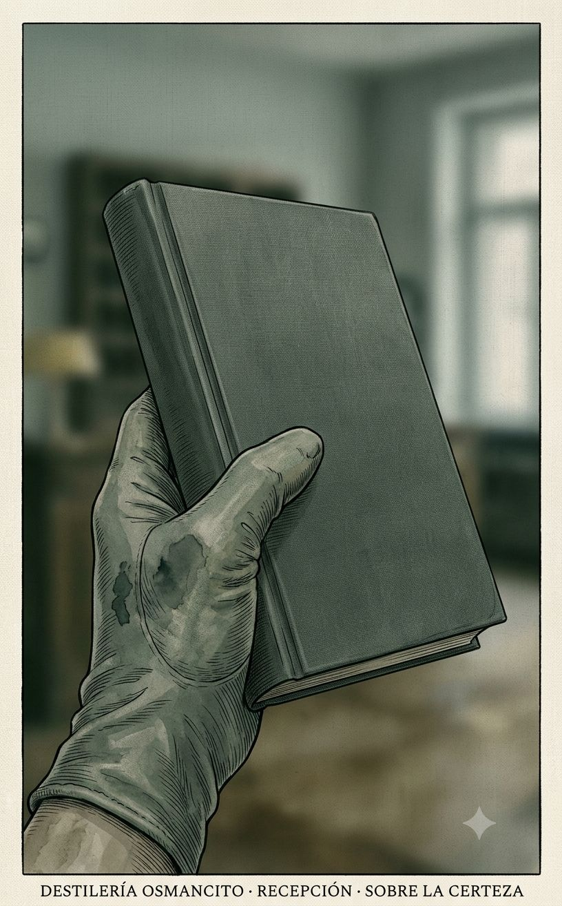
Un hombre que pasó la vida demoliendo certezas filosóficas escribe, en sus últimos dieciocho meses, un libro entero para defender que algunas certezas no se demuelen — y descubre, casi sin querer, que esa indemolibilidad no es triunfo de la razón sino condición de que haya razón. El libro no concluye: se interrumpe, dos días antes de la muerte de su autor, en una frase sobre alguien que sueña que llueve mientras de hecho llueve.
Seiscientos setenta y seis fragmentos numerados, escritos contra reloj, que terminan a dos días de un cáncer terminal y nunca fueron revisados por su autor para publicación.
Esto no es un tratado: es un cuaderno de trabajo que se volvió libro porque su autor murió antes de poder convertirlo en otra cosa. Wittgenstein discute, fecha por fecha, durante año y medio, con un fantasma — G. E. Moore y su mano levantada como prueba del mundo exterior — y termina enterrando la pregunta misma de si las certezas básicas se “saben” o simplemente se viven. Nombrar este corpus como objeto es nombrar una interrupción, no una arquitectura.
Título — Über Gewißheit (Sobre la certeza) Autor — Ludwig Wittgenstein Año — 1969 (publicación póstuma; escrito entre 1949 y abril de 1951) Género — Filosofía — epistemología, notas de trabajo aforísticas Extensión estimada — 28.693 palabras, aproximadamente 115 páginas (250 palabras/página), 676 fragmentos numerados sin división en capítulos Idioma original — Alemán Palabra más frecuente con contenido — wissen / “saber” (en sus formas: weiß, wissen, gewußt). Confirma: el corpus declara ocuparse de la certeza y del saber, y su léxico lo demuestra sin desviación — el verbo que más se repite es exactamente el que el título promete interrogar.
Wittgenstein dedica sus últimos dieciocho meses de vida a una pregunta provocada por los ensayos de G. E. Moore “Defensa del sentido común” y “Prueba del mundo exterior”: ¿qué significa decir “sé que esto es una mano”? El texto avanza por fragmentos numerados, fechados, que discuten, abandonan y retoman la misma pregunta desde ángulos distintos: lógica, gramática, psicología, antropología, pedagogía infantil. No hay tesis final cerrada — hay un giro progresivo desde “saber” hacia “certeza”, desde la proposición aislada hacia el sistema de creencias que la sostiene, desde la epistemología hacia algo más cercano a una forma de vida. El libro se interrumpe, no concluye: Wittgenstein murió de cáncer de próstata el 29 de abril de 1951, dos días después de escribir el último fragmento.
— Ludwig Wittgenstein: el autor; filósofo austríaco-británico, en el tramo final de su vida y de su obra. — G. E. Moore: filósofo británico cuyo “sé que tengo dos manos” es el objeto de discusión permanente, citado pero nunca presente como interlocutor directo. — El niño que aprende a hablar: figura recurrente, usada para mostrar cómo se adquiere la certeza antes de poder dudar de ella. — El maestro y el alumno escéptico: figura recurrente que dramatiza qué pasa cuando alguien duda de lo que el lenguaje da por sentado.
El texto parte de la afirmación de Moore de que “sé que aquí hay una mano” y pregunta si eso es realmente saber o algo distinto. Wittgenstein distingue progresivamente “saber” de “estar cierto”: saber exige poder dar razones y admitir error; la certeza básica no admite ninguno de los dos. Introduce la imagen del río: hay proposiciones que son lecho fijo (roca) y otras que son agua que fluye sobre ese lecho, y el lecho puede, con el tiempo, desplazarse. Llega a la imagen de las bisagras: para que la puerta de la duda gire, algo debe quedarse fijo sin ser justificado. Plantea que esas certezas no se aprenden como hechos sino como trasfondo heredado, “imagen del mundo”, casi mitología, adquirida por persuasión antes que por argumento. Sostiene que la fundamentación tiene un fin: no en una intuición ni en una prueba última, sino en una forma de actuar. Cierra, sin resolver, examinando los límites de “no puedo equivocarme en esto”: cuántas excepciones admite el sistema antes de dejar de ser el mismo juego.
Primer contacto. Esto no se lee como argumento, se lee como alguien pensando en voz alta sin red, dándose vueltas sobre la misma piedra durante mes y medio para sacarle una arista distinta cada vez. Incomoda al principio —¿por qué tanta vuelta sobre si sé o no que tengo dos manos?— y después de cien fragmentos uno entiende que la pregunta nunca fue sobre las manos. Hay algo casi devocional en la repetición: una mente que sabe que se está acabando y elige, contra toda prisa razonable, no apresurar la pregunta más importante que le queda.
¿Saber y estar-cierto son la misma cosa con dos nombres, o dos categorías que el lenguaje confunde sin remedio?
El sistema de certezas se aprende por persuasión, no por prueba —¿qué le pasa entonces a la palabra “razón” cuando se la usa para defenderlo?
Un hombre que dedicó la vida a mostrar que el lenguaje filosófico se enreda solo, escribe su última obra defendiendo que hay un punto donde el lenguaje no puede ni debe seguir preguntando: ¿es esto una rendición o el lugar al que toda su filosofía apuntaba desde el principio?

Epítome literario Prensado al 20% ~5.400 palabras
§1. Si sabes que aquí hay una mano, te concedemos todo lo demás.
§2. Que a mí —o a todos— nos parezca así, no se sigue que sea así. Pero bien puede preguntarse si esto puede dudarse con sentido.
§3. Esta posibilidad de convencerse pertenece al juego de lenguaje. Es uno de sus rasgos esenciales.
§4. Pero ¿qué hay de una proposición como «sé que tengo un cerebro»? ¿Puedo dudarla? ¡Me faltan motivos para dudar! Todo habla en su favor, y nada en contra. Y sin embargo puede imaginarse que en una operación mi cráneo resultara estar vacío.
§6. Si así, sin más, se abusa de la palabra «sé». Y por este abuso parece mostrarse un estado de espíritu extraño y de suma importancia.
§8. La diferencia entre el concepto de «saber» y el concepto de «estar seguro» en realidad no es de gran importancia, excepto allí donde «sé» debe significar: no puedo equivocarme.
§12. Pues «yo sé…» parece describir un estado de cosas que garantiza lo sabido como hecho. Se olvida siempre la expresión «creí saberlo».
§13. No es que de la afirmación del otro «sé que es así» pueda inferirse la proposición «es así». Pero ¿no puedo yo inferir de mi afirmación «sé etc.» que «es así»? Sí; y de la proposición «él sabe que ahí hay una mano» se sigue también «ahí hay una mano». Pero de su afirmación «sé…» no se sigue que él lo sepa.
§14. Hay que demostrar primero que él lo sabe.
§15. Que no fue posible error alguno, debe ser demostrado. El aseguramiento «lo sé» no basta.
§16. Si yo sé algo, también sé que lo sé. Si soy esto debe poder constatarse objetivamente.
§18. «Lo sé» significa a menudo: tengo las razones correctas para mi afirmación.
§19. Entonces un hombre razonable no dudará de que yo lo sé. Tampoco el idealista; pero dirá que de la duda práctica, ya eliminada, no se trataba; que hay aún una duda detrás de esta.
§22. Sería extraño que tuviéramos que creer al digno de confianza que dice «no puedo equivocarme»; o al que dice «no me equivoco».
§24. La pregunta del idealista sería más o menos esta: «¿con qué derecho no dudo de la existencia de mis manos?»
§25. También en eso, «que aquí hay una mano», uno puede equivocarse. Sólo bajo determinadas circunstancias no.
§28. ¿Qué es «aprender una regla»? — Esto.
§30. No se concluye sobre el estado de cosas a partir de la propia certeza. La certeza es como un tono en el que se constata el estado de cosas, pero no se concluye del tono que esté justificado.
§31. Las proposiciones a las que uno, como hechizado, vuelve siempre, quisiera eliminarlas del lenguaje filosófico.
§34. Una vez deben tener fin estas explicaciones.
§35. Pero ¿no se puede imaginar que no hubiera objetos físicos? No lo sé. Y sin embargo «hay objetos físicos» es un sin sentido.
§38. Lo interesante es cómo usamos las proposiciones matemáticas.
§42. Se puede decir «él lo cree, pero no es así», pero no «él lo sabe, pero no es así».
§44. No hemos aprendido esto mediante una regla, sino aprendiendo a calcular.
§46. Lo más importante es: no se necesita la regla. No nos falta nada. Calculamos según una regla, esto es suficiente.
§47. Así se calcula. Y calcular es esto.
§52. No hay una frontera nítida entre ellos.
§54. No es verdad que el error desde el planeta hasta mi propia mano se vuelva sólo cada vez más improbable. En un punto deja de ser pensable.
§55. ¿Es entonces posible la hipótesis de que no existan todas las cosas en nuestro entorno?
§56. La duda pierde poco a poco su sentido. Así es este juego de lenguaje.
§58. «No hay duda alguna en este caso» o «la palabra ‹no sé› no tiene sentido en este caso».
§61. El significado de una palabra es una especie de su uso.
§63. Si imaginamos los hechos de otro modo del que son, ciertos juegos de lenguaje pierden importancia, otros la cobran.
§64. Compara el significado de una palabra con la «función» de un funcionario.
§66. Hago afirmaciones sobre la realidad con distintos grados de certeza. ¿Cómo se muestra el grado de certeza? ¿Qué consecuencias tiene?
§67. ¿Podríamos imaginarnos a un hombre que se equivoca siempre donde tenemos por excluido un error?
§70. Si me equivoco en eso, este error apenas es menor que si creyera (falsamente) que escribo chino y no alemán.
§71. Si mi amigo un día se imaginara haber vivido desde hace mucho aquí y allá, no llamaría a esto un error, sino quizá pasajera perturbación mental.
§73. ¿Cuál es la diferencia entre error y perturbación mental?
§74. ¿Se puede decir: un error no sólo tiene una causa, sino también un fundamento?
§77. ¿Sería la certeza realmente mayor con una verificación veinte veces repetida?
§80. Se examina mediante la verdad de mis afirmaciones mi comprensión de estas afirmaciones.
§82. Lo que vale como verificación suficiente de una afirmación pertenece a la lógica.
§83. La verdad de ciertas proposiciones de experiencia pertenece a nuestro sistema de referencia.
§84. Es filosóficamente sin interés si Moore sabe esto o aquello, pero interesante que y cómo puede saberse. Pues tampoco es como si él hubiera alcanzado su proposición por un camino de pensamiento que, aunque accesible para mí, yo no hubiera recorrido.
§88. Yacen al margen del camino por el que se mueve la investigación.
§90. «Sé» tiene un significado primitivo, semejante y emparentado con el de «veo».
§91. Pues si no, no lo sabe (Russell).
§92. ¿Por qué no habría de educarse a un rey en la creencia de que el mundo comenzó con él?
§93. Nada en mi imagen del mundo habla en favor de lo contrario.
§94. Sino que es el trasfondo heredado sobre el cual distingo entre verdadero y falso.
§95. Las proposiciones que describen esta imagen del mundo podrían pertenecer a una especie de mitología.
§96. Ciertas proposiciones de la forma de proposiciones de experiencia se solidificarían y funcionarían como guía para las proposiciones de experiencia no solidificadas, fluidas; y esta relación cambiaría con el tiempo.
§97. La mitología puede volver a fluir, el lecho del río de los pensamientos puede desplazarse.
§98. Pero es correcto que la misma proposición pueda tratarse una vez como sometida a prueba por la experiencia, otra vez como regla de la prueba.
§99. La orilla de ese río consiste en parte de roca dura, que no sufre cambio alguno o uno imperceptible, y en parte de arena, que es arrastrada y depositada aquí y allá.
§100. Las verdades que Moore dice saber son tales que, dicho de paso, todos sabemos, si él las sabe.
§102. Pero mis convicciones forman un sistema, un edificio.
§103. Sino que está anclada de tal modo en todas mis preguntas y respuestas que no puedo tocarla.
§105. El sistema no es tanto el punto de partida como el elemento vital de los argumentos.
§106. Un niño no se aferrará por lo general a tal creencia y pronto se convencerá de lo que en serio le decimos.
§108. De alguien que dijera esto nos sentiríamos espiritualmente muy distanciados.
§110. Como si la fundamentación no llegara nunca a su fin. Pero el fin no es el supuesto infundado, sino el modo de actuar infundado.
§111. Quiero decir: que no he estado en la luna está para mí tan firme como pueda estarlo cualquier fundamentación de ello.
§114. Quien no está cierto de ningún hecho, tampoco puede estar cierto del sentido de sus palabras.
§115. Quien quisiera dudar de todo, no llegaría siquiera a dudar. El juego mismo de la duda presupone ya la certeza.
§116. ¿No podría Moore, en lugar de «sé…», haber dicho «para mí es firme que…»?
§117. Nada se seguiría de ello, nada se explicaría por ello. No estaría conectado con nada en mi vida.
§122. ¿No se necesitan motivos para la duda?
§123. Adonde mire, no encuentro motivo para dudar de que…
§124. Quiero decir: usamos juicios como principios del juzgar.
§125. ¿Quién decide qué está firme?
§126. No estoy más cierto del significado de mis palabras que de ciertos juicios.
§128. He aprendido a juzgar así desde niño. Esto es juzgar.
§130. ¿No es la experiencia la que nos enseña a juzgar así? Pero ¿cómo nos lo enseña la experiencia?
§131. No, la experiencia no es el fundamento de nuestro juego de juzgar. Ni tampoco su éxito excepcional.
§133. ¿Ha probado la experiencia que esto es innecesario?
§134. ¿Puede negarse el efecto de la experiencia sobre nuestro sistema de supuestos?
§135. ¿No seguimos simplemente el principio de que lo que siempre ha sucedido, volverá a suceder? Esto último puede ser. No es un eslabón en nuestro razonamiento.
§137. No porque alguien sepa su verdad, o crea saberla, sino porque todas ellas juegan un papel semejante en el sistema de nuestros juicios empíricos.
§139. Para fijar una práctica no bastan reglas, se necesitan también ejemplos.
§140. Se nos hace plausible todo un conjunto de juicios.
§141. Cuando empezamos a creer algo, no creemos una proposición aislada, sino todo un sistema de proposiciones.
§142. No me convencen axiomas aislados, sino un sistema en el que las consecuencias y las premisas se apoyan mutuamente.
§143. El niño traga, por así decirlo, esta consecuencia junto con lo que aprende.
§144. Lo que está firme no lo está porque sea evidente o claro en sí, sino porque es sostenido por lo que lo rodea.
§145. Aquella proposición a la que apuntan pertenece también a su interpretación particular.
§147. Es una buena imagen, se confirma en todo, es también una imagen sencilla.
§148. No hay porqué. Simplemente no lo hago. Así actúo.
§149. Mis juicios mismos caracterizan el modo y manera en que juzgo, la esencia del juzgar.
§150. Debo empezar en algún punto a confiar; es decir, debo empezar en algún punto con el no-dudar; y esto pertenece al juzgar.
§151. Considerarlo como firme pertenece al método de nuestra duda y de nuestra investigación.
§152. Las proposiciones que están firmes para mí no las aprendo expresamente. Puedo hallarlas a posteriori como el eje de rotación de un cuerpo que gira.
§153. Nadie me ha enseñado que mis manos no desaparecen cuando no las vigilo.
§156. Para que el hombre se equivoque, ya debe juzgar conforme a la humanidad.
§159. Aprendemos de niños hechos, y los aceptamos con fe.
§160. El niño aprende creyendo al adulto. La duda viene después de la creencia.
§162. Tengo una imagen del mundo. ¿Es verdadera o falsa? Es sobre todo el sustrato de toda mi investigación y mi afirmar.
§163. Si en absoluto examinamos, ya presuponemos con ello algo que no se examina.
§166. La dificultad es comprender la carencia de fundamento de nuestra creencia.
§167. Es claro que nuestras afirmaciones de experiencia no tienen todas el mismo estatus.
§170. Creo lo que me transmiten los hombres de cierta manera. Así aprendo las ciencias. Sí, aprender se basa naturalmente en creer.
§182. La representación más primitiva es que la tierra nunca tuvo comienzo.
§185. Me parecería ridículo dudar de la existencia de Napoleón; pero si alguien dudara de la existencia de la tierra hace 150 años, estaría quizá más dispuesto a prestar atención, pues ahora duda de todo nuestro sistema de evidencia.
§188. Quien duda de la existencia de la tierra en aquel tiempo, debe atacar la esencia de toda evidencia histórica.
§189. Una vez hay que pasar de la explicación a la mera descripción.
§191. ¿Concuerda con certeza con la realidad, con los hechos? Con esta pregunta ya te mueves en círculo.
§192. Hay ciertamente justificación; pero la justificación tiene un fin.
§194. Con la palabra «cierto» expresamos la convicción completa, la ausencia de toda duda.
§196. Lo que llamamos «error» juega un papel muy determinado en nuestros juegos de lenguaje, y también lo que consideramos evidencia segura.
§197. Sería un sin sentido decir que consideramos algo como evidencia segura porque es ciertamente verdadero.
§199. El uso de «verdadero o falso» tiene algo engañoso porque es como si se dijera «concuerda con los hechos o no», cuando lo que precisamente se pregunta es qué es aquí la «concordancia».
§200. Pero esto no dice cómo se ve el fundamento de tal decisión.
§204. El fin no es que ciertas proposiciones se nos revelen inmediatamente como verdaderas, sino nuestro actuar, que está en el fundamento del juego de lenguaje.
§205. Si lo verdadero es lo fundamentado, entonces el fundamento no es ni verdadero ni falso.
§209. Que la tierra existe es más bien parte de toda la imagen que forma el punto de partida de mi creencia.
§210. Algunas cosas nos parecen firmes, y se retiran de la circulación. Se desvían, por así decirlo, a una vía muerta.
§211. Quizá una vez fue discutido. Pero quizá desde tiempos inmemoriales perteneció al andamiaje de todas nuestras consideraciones.
§214. ¿Qué me impide suponer que esta mesa, si nadie la mira, desaparece o cambia de forma y color?
§215. La idea de la «concordancia con la realidad» no tiene aquí una aplicación clara.
§217. Reacciona simplemente de otro modo: nosotros confiamos en ello, él no; nosotros estamos seguros, él no.
§225. Lo que sostengo no es una proposición, sino un nido de proposiciones.
§229. Nuestro discurso recibe su sentido por nuestras demás acciones.
§232. No es que dudemos de todos.
§233. Sólo podría responder a aquella pregunta a quien yo le enseñara primero una imagen del mundo.
§234. Si quisiera dudar de la existencia de la tierra mucho antes de mi nacimiento, debería dudar de todo lo que para mí está firme.
§235. Que algo está firme para mí no tiene su fundamento en mi estupidez o credulidad.
§238. Y si fuera así, debería simplemente dejarlo así.
§245. No hay seguridad subjetiva de que sé algo. Subjetiva es la certeza, pero no el saber.
§246. «Aquí he llegado a un fundamento de toda mi creencia.» «¡Esta posición la mantendré!»
§247. Aún no tengo ningún sistema en el que pudiera existir esta duda.
§248. He llegado al suelo de mis convicciones. Y de este cimiento casi se podría decir que es sostenido por toda la casa.
§249. Uno se hace una imagen falsa de la duda.
§253. En el fondo de la creencia fundamentada está la creencia no fundamentada.
§254. Todo hombre «razonable» actúa así.
§256. Por otra parte, el juego de lenguaje cambia con el tiempo.
§259. Quien dudara de que la tierra existe desde hace 100 años, podría tener una duda científica o una duda filosófica.
§260. Quisiera reservar la expresión «sé» para los casos en que se usa en el tráfico normal del lenguaje.
§262. A este podríamos instruirlo: la tierra ya existía desde hace mucho. Trataríamos de darle nuestra imagen del mundo. Esto sucedería mediante una especie de persuasión.
§263. El alumno cree a sus maestros y a los libros de escuela.
§266. Y aquí habría que decir aún qué son razones convincentes.
§270. Estas razones hacen objetiva la certeza.
§271. Qué sea una razón válida para algo no lo decido yo.
§272. Yo sé = me es conocido como cierto.
§274. Que a alguien al que se le ha cortado el brazo no le crece de nuevo, es uno de tales. Que alguien al que se le ha cortado la cabeza está muerto y no vuelve a vivir nunca más, otro.
§275. Si la experiencia es el fundamento de esta nuestra certeza, es naturalmente la experiencia pasada. Y no es sólo mi experiencia, sino la de los otros, de quien recibo conocimiento.
§276. Creemos, por así decirlo, que este gran edificio está ahí, y ahora vemos aquí una esquinita, allá otra esquinita.
§279. Sentimos que quien pudiera creer lo contrario, podría dar crédito a todo lo que declaramos imposible.
§281. Dudar de ello me parece locura, ciertamente otra vez de acuerdo con otros; pero yo estoy de acuerdo con ellos.
§283. Pues ¿cómo puede el niño dudar de inmediato de lo que se le enseña? Esto sólo podría significar que no podría aprender ciertos juegos de lenguaje.
§284. Siempre han aprendido de la experiencia, y por sus acciones se puede ver que creen con certeza ciertas cosas, las expresen o no.
§286. Y aunque estén muy seguros de su asunto, están en el error, y nosotros lo sabemos.
§287. La ardilla no concluye por inducción que también el próximo invierno necesitará provisiones. Y tampoco nosotros necesitamos una ley de la inducción para justificar nuestras acciones y predicciones.
§288. Este cuerpo de saber me fue transmitido, y no tengo motivo para dudar de él, sino más bien muchas confirmaciones.
§291. Sabemos que la tierra es redonda. Nos hemos convencido definitivamente de que es redonda. — «¿Cómo sabes eso?» — Lo creo.
§292. Nuevos intentos no pueden desmentir a los anteriores, a lo sumo cambiar toda nuestra concepción.
§295. No es prueba de que lo mismo haya vuelto a suceder; pero decimos que nos da derecho a suponerlo.
§298. Estar completamente ciertos de ello no significa sólo que cada individuo esté seguro, sino que pertenecemos a una comunidad unida por la ciencia y la educación.
§301. ¿Cómo hay que imaginarse el descubrimiento de este error?
§302. No sirve de nada decir «quizá nos equivocamos», cuando, si no hay que confiar en ninguna evidencia, en el caso de la evidencia presente tampoco hay que confiar.
§304. Más tarde puedo decir que estaba confundido, pero no que me equivoqué.
§307. Si lo intentara, podría dar mil, pero ninguna tan cierta como aquello que deben fundamentar.
§308. «Saber» y «certeza» pertenecen a categorías distintas. No son dos «estados de ánimo».
§310. «No interrumpas más y haz lo que te digo; tus dudas todavía no tienen ningún sentido.»
§312. Esta duda me parece hueca. Pero ¿no es entonces también la creencia en la historia? No; esta está conectada con tanto.
§315. El maestro sentirá que esto sólo lo detiene a él y al alumno, que con ello sólo se atasca en el aprender y no avanza.
§318. «La pregunta no se plantea en absoluto.» Su respuesta caracterizaría un método.
§319. La imprecisión es justamente la de la frontera entre regla y proposición de experiencia.
§320. El concepto mismo de «proposición» no es nítido.
§321. Toda proposición de experiencia puede transformarse en un postulado, y se vuelve entonces una norma de representación.
§323. ¿Debe entonces toda desconfianza razonable tener un motivo?
§325. Cuando decimos que sabemos que…, queremos decir que todo hombre razonable en nuestra situación también lo sabría, que sería irracionalidad dudarlo.
§330. La proposición «lo sé…» expresa aquí la disposición a creer ciertas cosas.
§331. ¿Debemos sorprendernos entonces de que no podamos dudar de tantas cosas?
§337. Cuando escribo una carta y la envío, supongo que llegará, lo espero.
§338. ¿Cómo se diferenciaría la vida de esta gente de la nuestra?
§339. Hace todo lo que hace el hombre común, pero lo acompaña de dudas o disgusto consigo mismo.
§341. Es decir, las preguntas que hacemos y nuestras dudas se basan en que ciertas proposiciones están exentas de duda, como bisagras en las que aquellas se mueven.
§342. Pertenece a la lógica de nuestras investigaciones científicas que algo de hecho no sea puesto en duda.
§343. Si quiero que la puerta gire, las bisagras deben permanecer fijas.
§344. Mi vida consiste en que me conformo con muchas cosas.
§345. No puedo al mismo tiempo dudar de si mi propia memoria, en lo referente al significado de los nombres de colores, no me falla.
§350. Si tales pensamientos giraran a menudo en su cabeza, no nos sorprenderíamos.
§354. Comportamiento dudoso y no dudoso. El primero sólo existe si existe el segundo.
§357. Se podría decir: «‹lo sé› expresa la certeza tranquila, no la que aún lucha».
§358. No quisiera ver esta certeza como algo emparentado con la precipitación o la superficialidad, sino como (una) forma de vida.
§359. Quiero concebirla como algo que está más allá de lo justificado y lo no justificado; pues, por así decirlo, como algo animal.
§360. No podría reconocer experiencia alguna como prueba de lo contrario.
§366. ¿Y si estuviera prohibido decir «lo sé» y sólo permitido decir «creo saberlo»?
§375. La total ausencia de duda en un punto, incluso allí donde, como diríamos, podría haber dudas «justificadas», no tiene que falsificar un juego de lenguaje.
§377. Esta pasión es algo (muy) raro, y no hay rastro de ella cuando hablo de este pie como de costumbre.
§378. El saber se funda al final en el reconocimiento.
§380. El hecho está para mí en el fundamento de todo conocimiento. Renunciaré a otras cosas, pero no a esta.
§381. Esto «nada en el mundo…» es evidentemente una actitud que no se tiene frente a todo lo que se cree.
§383. El argumento «quizá sueño» es por eso sin sentido, porque entonces también esta afirmación es soñada.
§386. Es importante que para este grado haya un máximo.
§388. ¿Es más una prueba de la existencia de las cosas exteriores que yo sepa que eso es una mano, que el que no sepa si es oro o latón?
§390. Importante es sólo que tiene sentido decir que se sabe algo así; y por eso el aseguramiento de que se lo sabe no puede aquí lograr nada.
§392. Lo que debo mostrar es que una duda no es necesaria, aunque sea posible.
§394. «Esto pertenece a las cosas de las que no puedo dudar.»
§395. «Sé todo eso.» Y esto se mostrará en cómo actúo y hablo de las cosas.
§397. ¿No muestro que lo sé, sacando siempre las consecuencias de ello?
§401. Esta constatación no es de la forma «sé…». «Sé…» dice lo que yo sé, y eso no es de interés lógico.
§403. Es verdad sólo en cuanto es un fundamento inquebrantable de sus juegos de lenguaje.
§404. No es que el hombre en ciertos puntos sepa la verdad con perfecta certeza, sino que la perfecta certeza se refiere sólo a su actitud.
§406. Aquello a lo que apunto reside también en la diferencia entre la constatación ocasional «sé que eso…», como se usa en la vida ordinaria, y esta afirmación, cuando la hace el filósofo.
§409. ¿No es todo el chiste que estoy seguro de las consecuencias, que si otro hubiera dudado, podría decirle «¿ves? te lo dije»?
§410. Nuestro saber forma un gran sistema. Y sólo en este sistema lo particular tiene el valor que le atribuimos.
§412. Podría perfectamente entender el enunciado «esto es mi mano» como una explicación de las palabras «mi mano».
§415. ¿No es engañarse uno sólo por la peculiaridad gramatical de que de «sé p» se sigue «p»?
§417. Lo sé, y no lo extraigo de otro dato inmediato.
§419. No puedo apartarme de este juicio sin arrastrar con él todos los demás juicios.
§420. ¿No podría yo equivocarme por completo en mi juicio?
§421. Todo a mi alrededor me lo dice, así dejo vagar mis pensamientos y a donde sea, así me lo confirman.
§425. Sería completamente engañoso decir: creo que me llamo L. W. Y también es correcto: no puedo equivocarme en eso. Pero esto no significa que sea infalible en ello.
§427. Hay que mostrar que, aunque nunca use las palabras «sé…», su conducta muestra aquello que nos importa.
§432. La afirmación «sé…» sólo puede tener su significado en conexión con la restante evidencia del «saber».
§434. ¿Nos enseña la experiencia que los hombres bajo tales y tales circunstancias saben esto y aquello?
§436. ¿Está Dios ligado por nuestro saber? ¿Pueden algunas de nuestras afirmaciones no ser falsas?
§438. No bastaría asegurar que sé lo que pasa allí y allá, sin dar razones que convenzan al otro de que estoy en condiciones de saberlo.
§441. En la sala del tribunal, el mero aseguramiento del testigo «lo sé…» no convencería a nadie. Debe mostrarse que el testigo estaba en condiciones de saberlo.
§449. Debe enseñársenos algo como fundamento.
§455. Todo juego de lenguaje se basa en que las palabras y los objetos sean reconocidos.
§457. ¿Quiero entonces decir que la certeza reside en la esencia del juego de lenguaje?
§458. Se duda por motivos determinados. Se trata de esto: ¿cómo se introduce la duda en el juego de lenguaje?
§463. Una broma de este tipo realmente la hizo una vez Renan.
§472. Cuando el niño aprende el lenguaje, aprende a la vez qué hay que investigar y qué no.
§474. Este juego se confirma. Esto puede ser la causa de que se juegue, pero no el motivo.
§475. El lenguaje no surgió de un razonamiento.
§476. El niño no aprende que hay libros, que hay sillas, etc., sino que aprende a traer libros, a sentarse en sillas, etc.
§477. ¿No basta que la experiencia no demuestre lo contrario después?
§478. ¿Cree el niño que hay leche? ¿O sabe que hay leche? ¿Sabe el gato que hay un ratón?
§480. ¿Pero puede decirse que el niño sabe: que hay un árbol? Y dudar significa pensar.
§481. Es como si Moore hubiera hecho caer sobre ello la luz equivocada.
§482. Es como si el «yo sé» no soportara ningún énfasis metafísico.
§488. No puede demostrarse mediante las afirmaciones de quienes creen saberlo, que se pueda saber algo sobre cosas físicas.
§493. ¿Es entonces así que debo reconocer ciertas autoridades para poder juzgar en absoluto?
§495. Se podría simplemente decir «¡ah, tontería!». Es decir, no responderle, sino corregirlo.
§497. Entonces esto no puede ser falso, porque precisamente con ello se define un juego.
§499. La «ley de la inducción» no puede fundamentarse tan poco como ciertas proposiciones particulares referentes al material de experiencia.
§501. Debes ver la práctica del lenguaje, entonces la verás.
§505. Siempre es por gracia de la naturaleza que se sabe algo.
§508. ¿En qué puedo confiar?
§509. Quiero decir que un juego de lenguaje sólo es posible si uno se fía de algo.
§510. Es para mí una afirmación inmediata. No pienso en pasado o futuro.
§511. Pero este asir inmediato corresponde a una certeza, no a un saber.
§513. ¿Tenía yo razón cuando, ante todos estos sucesos, decía «sé que esto es una casa»?
§514. Esta afirmación me parecía fundamental; si esto es falso, ¿qué es todavía «verdadero» y «falso»?
§516. Y podría entonces decidirme a mantener mi vieja creencia.
§519. Para poder seguir una orden debes estar fuera de toda duda sobre un hecho de experiencia. Sí, la duda se basa sólo en lo que está fuera de duda.
§520. Moore tiene buen derecho a decir que sabe que hay un árbol frente a él. Naturalmente puede equivocarse. Pero si en este caso tiene razón o se equivoca, no es filosóficamente importante.
§521. El error de Moore está en responder, a la afirmación de que esto no puede saberse, «lo sé».
§524. ¿Basta entonces que exista el sentimiento de seguridad, aunque sea con un leve soplo de duda?
§538. El saber comienza recién en un estadio posterior.
§549. Pero tengo derecho a decirlo, si estoy seguro de que hay uno allí, aun si estoy equivocado.
§550. Si alguien cree algo, no siempre hay que poder responder la pregunta de «por qué lo cree»; pero si sabe algo, debe poder responderse la pregunta «¿cómo lo sabe?».
§553. Pero si hago la misma afirmación donde hay necesidad de ella, me parece, aunque no esté ni un pelo más segura su verdad, perfectamente justificada y cotidiana.
§556. No se dice: está en condiciones de creerlo. Pero sí: «es razonable suponer (o ‹creer›) esto en esta situación».
§558. Lo que en el futuro suceda, como sea que el agua se comporte en el futuro, sabemos que hasta ahora se ha comportado así en innumerables casos.
§559. Debes considerar que el juego de lenguaje es, por así decirlo, algo impredecible. Está ahí —como nuestra vida.
§560. Y el concepto de saber está acoplado al del juego de lenguaje.
§562. Es importante imaginarse un lenguaje en el que no exista nuestro concepto «saber».
§563. «Estoy seguro» te da la certeza subjetiva. «Lo sé» significa que entre yo, que lo sé, y el que no lo sabe, hay una diferencia de comprensión.
§566. El niño que aprende mi juego de lenguaje no aprende a decir «sé que esto se llama ‹placa›».
§572. Pero ¿qué influencia tiene esto en el uso del lenguaje?
§575. La utilidad de este signo debe surgir de la experiencia.
§577. Me negaría a considerar cualquier argumento que quisiera mostrar lo contrario.
§578. Pero entonces deberían abrírseme los ojos.
§579. Pertenece al juego de lenguaje con los nombres de personas que cada uno sepa su nombre con la mayor certeza.
§585. ¿Pero no dice «sé que eso es un árbol» algo distinto de «eso es un árbol»?
§588. «Sé» sólo tiene sentido si lo enuncia una persona. Pero entonces es indiferente si la expresión es «sé…» o «esto es…».
§590. Aquí uno puede convencerse de que realmente posee este saber.
§593. Con «no sé…» entra un nuevo elemento en los juegos de lenguaje.
§594. Si alguien lo negara, inmediatamente establecería innumerables conexiones que lo asegurarían.
§596. Esta no es una pregunta infalible, es decir, puede resultar falsa, pero esto no quita sentido a la pregunta «¿puedes…?» ni a la respuesta «no».
§599. Yo mismo hice el experimento en la escuela. Pero este argumento es sin valor. Decir: al final sólo podemos aducir razones que nosotros tenemos por razones, no dice nada.
§600. No tengo motivo para no confiar en ellos. Y confío en ellos.
§606. No es motivo de ninguna inseguridad en mi juicio o actuar.
§611. Donde se encuentran realmente dos principios que no pueden reconciliarse, cada uno declara al otro loco y hereje.
§612. Al final de las razones está la persuasión.
§615. ¿Significa esto: sólo puedo juzgar en absoluto porque las cosas se comportan así y así (como con buena voluntad)?
§617. Sería arrancado de la seguridad del juego.
§619. Podría, igual que antes, hacer inferencias —pero si esto se llamaría «inducción» es otra cuestión.
§624. Mi respuesta a esto sólo puede ser «no».
§625. Pero estas medidas de precaución sólo tienen sentido si alguna vez llegan a un fin. Una duda sin fin no es siquiera una duda.
§628. Pero esto presupone que es sin sentido decir que la mayoría de los hombres se equivoca en sus nombres.
§629. Pero esto no significa que para otros sea sin sentido dudar de lo que yo declaro cierto.
§631. «No puedo equivocarme en esto» caracteriza simplemente una clase de afirmación.
§633. Pero ¿esto vuelve sin sentido la expresión «no puedo equivocarme etc.»?
§637. Si me equivoco en mi afirmación, esto no quita al juego de lenguaje su utilidad.
§639. Pero ¿de qué demonios sirve, si en él puedo equivocarme?
§643. Pero tal caso, o su posibilidad, no desacredita la proposición «no puedo equivocarme en esto».
§647. Hay una diferencia entre un error para el cual, por así decirlo, hay un lugar previsto en el juego, y una completa irregularidad que ocurre por excepción.
§650. Esto significa: en ciertos (y frecuentes) casos puede eliminarse la posibilidad de un error.
§651. Pues la proposición matemática se obtuvo mediante una serie de acciones que en nada se distinguen de acciones del resto de la vida y que están igualmente expuestas al olvido, al descuido, al engaño.
§657. Las proposiciones de la matemática, podría decirse, son petrificaciones.
§659. Pero la suposición de que pudiera equivocarme aquí no tiene sentido.
§661. ¿Cómo podría equivocarme en la suposición de que nunca estuve en la luna?
§663. Tengo derecho a decir «no puedo equivocarme aquí», aun si estoy en el error.
§668. El otro podría, sin embargo, dudar de mi afirmación. Pero no sólo se dejará instruir por mí, si confía en mí, sino que también sacará determinadas conclusiones de mi convicción para mi conducta.
§669. Se puede dudar si entonces ha de entenderse en sentido completamente estricto, o si es más bien del tipo de una exageración.
§672. «Si no confío en esta evidencia, ¿por qué habría de confiar en alguna evidencia?»
§674. Puedo enumerar diversos casos típicos, pero no puedo dar una característica general.
§676. Quien sueña diciendo «sueño» tiene tan poca razón como cuando dice en sueños «llueve», mientras de hecho llueve.
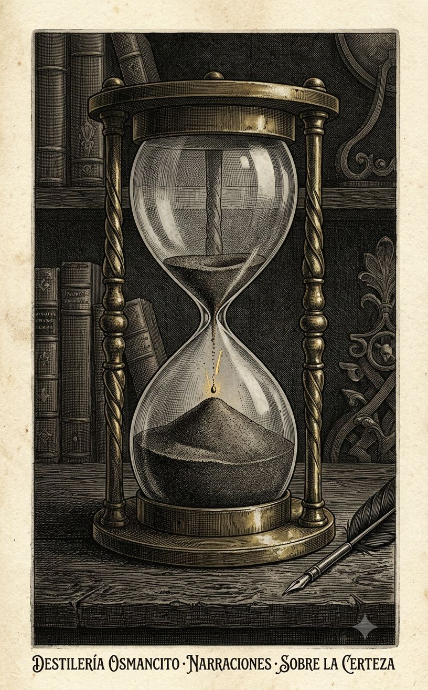
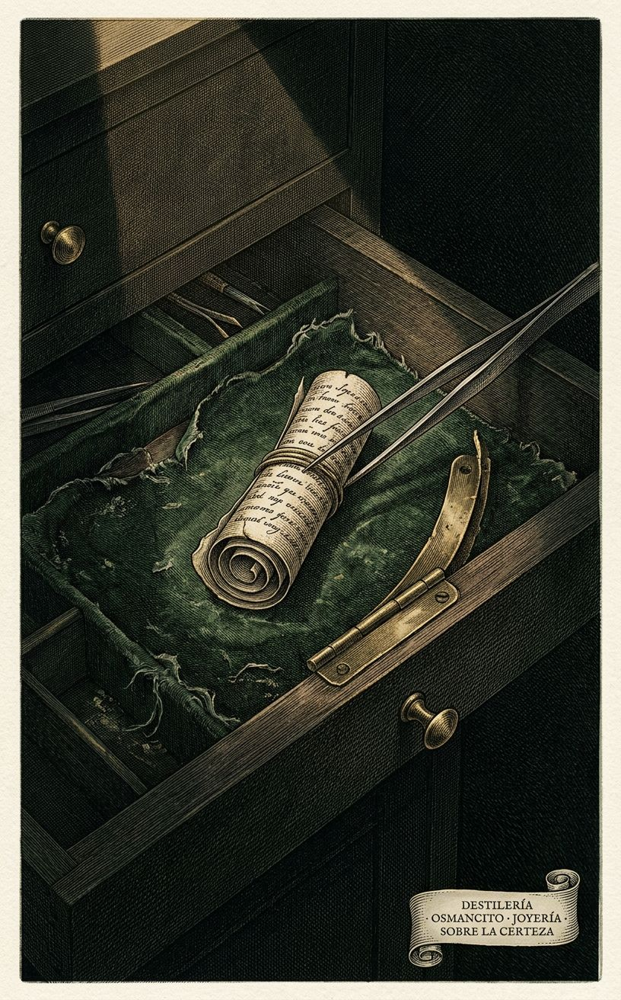
Un hombre agonizante pasa página tras página intentando demostrar que no puede dudar de que tiene dos manos, y en el camino descubre que la certeza no es una forma de saber sino una forma de no haber aprendido nunca a preguntar. La joya más dura del libro no es un argumento: es la imagen de un niño tragándose, junto con la leche, todo un sistema del mundo sin saber que lo traga.
El corpus no tiene capítulos. Avanza por 676 fragmentos numerados sin división formal. Se tratan aquí como un único campo de movimientos internos, agrupados por la mecánica real de la tensión, no por una estructura que el texto no posee.
La mano de Moore
Arranca con una afirmación ajena —“sé que aquí hay una mano”— que Wittgenstein no puede aceptar ni rechazar de plano. La tensión viaja hacia la pregunta de qué clase de “saber” es ese: si es saber en absoluto, o si la palabra se usa fuera de su trabajo normal. No cierra en una respuesta sino en una sospecha: que toda la fuerza de la frase de Moore depende de una gramática mal entendida. Energía: irritación filosófica contenida.
El cráneo vacío
Se abre con una hipótesis que casi nadie haría en serio: que una operación revelara un cráneo vacío donde se esperaba un cerebro. Escala rápido desde lo improbable hacia lo impensable, y en el camino separa el error ordinario de algo que ya no puede llamarse error. Termina en suspensión: la pregunta de qué clase de imposibilidad es esta queda abierta para el resto del libro. Energía: vértigo controlado.
El río y su lecho
Empieza como metáfora suelta y se convierte en la columna vertebral del libro: roca fija abajo, agua móvil arriba. Viaja hacia la afirmación de que el lecho mismo puede desplazarse con el tiempo, que la mitología puede volver a fluir. Cierra con una imagen estable que el resto del corpus seguirá citando sin nombrarla. Energía: geológica, paciente.
El edificio sin cimiento visible
Surge de la pregunta de en qué se apoyan las convicciones más firmes. Se desvía hacia la imagen de una casa sostenida no por un cimiento aislado sino por toda su propia estructura. No resuelve qué sostiene qué —invierte la pregunta: quizá nada sostiene nada, todo se sostiene mutuamente. Energía: vértigo arquitectónico.
El niño que traga el sistema
Arranca de la pedagogía infantil, del modo en que un niño aprende a hablar antes de poder dudar. Viaja hacia una imagen brutal de transmisión sin consentimiento: el niño no elige creer, traga la creencia junto con el lenguaje mismo. Cierra en una declaración seca sobre el origen no racional de toda racionalidad posterior. Energía: ternura inquietante.
Las bisagras de la duda
Se abre con la pregunta de qué hace posible dudar en absoluto. Viaja hacia la imagen mecánica de la puerta: para que algo gire, algo debe quedarse fijo. Cierra con una declaración casi axiomática sobre los límites lógicos de la duda misma —pero deja sin resolver cuántas bisagras hay, y si pueden moverse alguna vez. Tensión abierta. Energía: mecánica, fría.
El testigo y el tribunal
Surge de la pregunta de qué hace falta para que un aseguramiento de saber sea creíble. Se desvía hacia la escena del juicio, donde el “lo sé” del testigo no basta sin evidencia de que estuvo en condiciones de saberlo. Cierra trasladando esa exigencia legal a la filosofía misma: el filósofo que dice “lo sé” sin mostrar nada es un testigo no creíble. Energía: forense.
La autobiografía imposible
Empieza con un experimento mental personal: ¿podría Wittgenstein dudar de su propio nombre? Viaja hacia la distinción entre estar equivocado y estar confundido, entre error y locura. Cierra sin cerrar del todo: declara que algunos errores no tienen lugar en el sistema, son pura irregularidad. Tensión abierta. Energía: vértigo íntimo.
El sueño que dice “sueño”
Cierra el libro entero —literalmente, es el último movimiento, interrumpido por la muerte del autor. Arranca de la pregunta sobre el estatuto epistémico del sueño. Viaja sin desviarse hacia una paradoja seca: decir “sueño” dentro del sueño no prueba nada, igual que decir “llueve” en sueños no impide que de hecho llueva afuera. No cierra: el libro termina ahí, sin síntesis, sin epílogo. Tensión abierta —para siempre. Energía: suspendida, casi muda.
Veredicto del capítulo — Este campo de movimientos no construye un argumento lineal ni lo destruye: gira en espiral alrededor de la misma pregunta hasta que la pregunta se transforma en otra cosa, y se interrumpe antes de completar ese giro final.
Wittgenstein no escribe este libro para responder a Moore: lo escribe para descubrir por qué la respuesta de Moore, siendo verdadera, no sirve. “Sé que esto es una mano” es una frase correcta y sin embargo vacía cuando se usa como prueba filosófica, porque el saber exige razones que aquí nadie puede dar ni nadie necesita. El corpus entero es el intento de nombrar esa zona donde el lenguaje funciona perfectamente bien sin poder justificarse —y donde exigirle justificación es el verdadero error, no la falta de ella.
Lo que importa para el todo es el desplazamiento progresivo: empieza preguntando si Moore sabe lo que dice saber, y termina preguntando qué clase de cosa es la certeza misma, si certeza y saber son la misma especie de animal lingüístico o si pertenecen a reinos distintos que el alemán y el español confunden bajo un solo verbo. El libro nunca resuelve esa pregunta con una tesis. La resuelve con una práctica: muestra, fragmento tras fragmento, cómo actúa alguien que está cierto, y deja que el lector saque la conclusión de que esa actuación —no ninguna proposición— es el fondo último.
Por eso el corpus no se puede resumir en una doctrina sin traicionarlo. Su forma de avanzar —volver, abandonar, retomar, fechar cada nota como si el tiempo importara— es parte del contenido. Wittgenstein está mostrando, no solo diciendo, que la certeza no se argumenta: se habita. Y lo hace mientras él mismo, biológicamente, dejaba de habitar nada. El libro se interrumpe en la última línea sobre el sueño y la lluvia, sin que nadie haya decidido que ahí terminaba. Esa interrupción no es accidente editorial: es la prueba final, involuntaria, de la propia tesis del libro. Algo tiene que quedarse fijo para que el resto pueda moverse, y aquí lo que se quedó fijo fue el final mismo, congelado por una muerte que no esperó a que la filosofía terminara su frase.
El error de tener razón
Wittgenstein no acusa a Moore de mentir ni de equivocarse. Lo acusa de algo peor: de decir una verdad en el lugar exacto donde decirla no sirve de nada. Moore levanta la mano, dice “sé que esto es una mano”, y tiene toda la razón —y esa razón completa, intachable, es precisamente lo que hace del gesto un fracaso filosófico. Hay verdades que, dichas en el momento equivocado, no aclaran nada: solo prueban que quien las dice no entendió qué se estaba preguntando.
Lo que ningún cirujano podría mostrarte
Imagina que te abren el cráneo y no encuentran nada adentro. No un error médico, no una rareza: el cráneo simplemente vacío, sin cerebro, mientras tú sigues ahí, pensando, hablando, dudando de tu propio vaciamiento. Wittgenstein no propone esto como amenaza real. Lo propone para mostrar que hay un punto en que la imaginación deja de ser una herramienta y se vuelve un ruido: puedes formar las palabras de la hipótesis, pero ya no puedes formar la hipótesis misma.
El fondo del río que un día fue agua
Hay creencias que hoy parecen roca y antes fueron corriente. Wittgenstein no dice que la certeza sea eterna: dice que es geológica. El lecho del río puede desplazarse —lo que hoy es innegociable, algún día fue una hipótesis discutida hasta el cansancio, y lo que hoy se discute con pasión, algún día será el suelo sobre el que otros, sin saberlo, construirán sus propias dudas.
La casa que se sostiene a sí misma
Buscas el ladrillo de abajo, el que sostiene a todos los demás, y no lo encuentras. No porque esté oculto: porque no existe como ladrillo aislado. Toda la casa se sostiene entre sí, cada pared apoyando a la que tiene al lado, y ninguna por debajo de todas. Wittgenstein deja al lector con una sensación incómoda y familiar: la misma que tiene cualquiera que, al intentar explicar por qué cree lo que cree, descubre que cada razón remite a otra razón, y ninguna es la última.
Lo que se aprende sin que nadie lo enseñe
Un niño no decide creer que el mundo existía antes de que él naciera. Se lo traga, dice Wittgenstein, como se traga la leche: junto con el lenguaje mismo, sin que nadie se lo explique como tesis y sin que el niño tenga edad para exigir pruebas. Esto es incómodo de leer porque uno reconoce, en el acto, su propia infancia: nadie eligió sus primeras certezas, y sin embargo son las que sostienen todo lo que después se eligió creer o dudar.
El alumno que se atasca
Hay alumnos que preguntan demasiado pronto. Wittgenstein imagina al maestro frente a uno de ellos —el que duda de lo que todavía no ha aprendido a usar— y no lo describe como sabio sino como exasperado: el maestro sentirá que esa duda no lo lleva a ninguna parte, que solo atasca a los dos en el aprender. Es una imagen que cualquiera que haya enseñado algo reconoce de inmediato, aunque nunca la haya puesto en palabras.
La puerta que solo gira si algo no se mueve
Wittgenstein no defiende la certeza como una virtud. La defiende como una condición mecánica: ninguna puerta gira si también giran las bisagras. Para que la duda exista en absoluto —para que tenga sentido decir “no estoy seguro”— necesita algo que no esté en duda, sosteniendo el gesto. Es una imagen que cualquiera repetiría en una sobremesa: dudar de todo, a la vez, no es escepticismo. Es parálisis.
Lo que un juez nunca aceptaría de un filósofo
En una sala de tribunal, nadie se conforma con que el testigo diga “lo sé” y se quede ahí. Hay que mostrar que estaba en condiciones de saberlo: que vio, que oyó, que pudo. Wittgenstein traslada esa exigencia, sin piedad, al filósofo que dice “sé que el mundo existe” y espera que eso baste. El tribunal lo rechazaría en segundos. La filosofía, durante siglos, no.
Confundirse no es lo mismo que equivocarse
Wittgenstein imagina la frontera entre dos cosas que el lenguaje cotidiano confunde sin esfuerzo: equivocarse en un hecho, y perder por completo el contacto con la realidad. No es una diferencia de grado, dice, sino de especie: uno tiene causa, el otro también tiene fundamento; uno se corrige con un dato nuevo, el otro exigiría reconstruir, desde cero, lo que significa estar cuerdo.
La frase que ni el sueño puede salvar
Si alguien, dormido, dice “estoy soñando”, esa frase no prueba nada —ni que esté soñando ni que no lo esté. Es exactamente como decir “llueve” en un sueño mientras, afuera, en la vigilia, efectivamente llueve: la coincidencia no convierte al sueño en conocimiento. Esta es, literalmente, la última idea que Wittgenstein deja escrita antes de morir, dos días después. No hay cierre, no hay síntesis final: el libro se detiene en una frase sobre la imposibilidad de que el sueño se demuestre a sí mismo verdadero, y ahí, sin más, se queda fijo —como una bisagra que ya no tiene puerta que sostener.
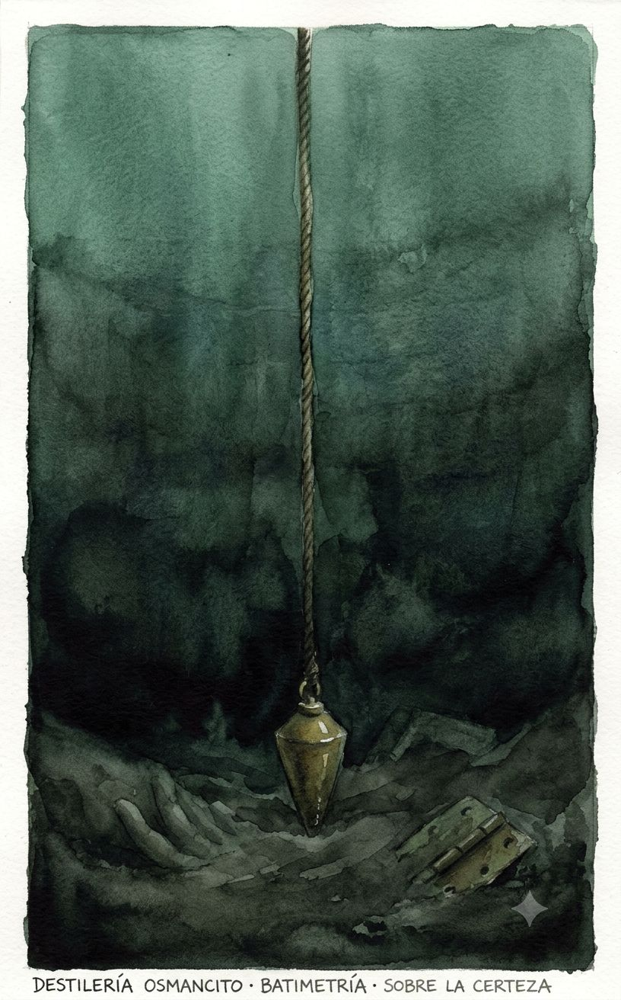
Lo más sepultado de este libro no es ninguna tesis filosófica: es el cuerpo. Wittgenstein nunca menciona que se está muriendo, pero el ritmo entrecortado, las fechas que se acumulan, la interrupción final sin epílogo —todo eso es la enfermedad escribiendo entre líneas de algo que se llama, en superficie, epistemología.
Vivo
La pregunta explícita sobre la diferencia entre “saber” y “estar cierto” está en superficie desde el primer fragmento: se nombra, se discute, se reformula sin disfraz cientos de veces. Igual de visible está la imagen de Moore levantando la mano —el detonante citado abiertamente y vuelto a citar como ancla de casi todo el libro. La distinción entre proposición empírica y regla gramatical también circula sin ocultarse, lo mismo que la imagen de las bisagras y la del río: Wittgenstein las exhibe como herramientas de trabajo, no como hallazgos a esconder.
Sepultado
El argumento contra el escepticismo radical está presente en casi cada fragmento, pero nunca se presenta como argumento único y resumible: se dispersa en docenas de variaciones —el cráneo vacío, el viaje a la luna, el nombre propio, la operación quirúrgica— que, leídas por separado, parecen ejercicios sueltos. Solo bajo presión, leyendo el corpus entero como una sola unidad, se revela que todas esas variaciones atacan la misma tesis desde ángulos distintos: que dudar de todo, sistemáticamente, no es escepticismo sino la disolución del propio acto de dudar. También sepultada está la genealogía pedagógica: el libro vuelve, fragmento tras fragmento, a cómo el niño aprende —pero nunca se detiene a construir una teoría explícita del desarrollo infantil; queda repartida en alusiones que solo cobran peso acumulado.
Cifrado
Propuesta, no certeza: el libro entero puede leerse como una respuesta indirecta y nunca confesada a su propia obra anterior. Wittgenstein había enseñado, en las Investigaciones filosóficas, que el significado es uso y que los juegos de lenguaje no necesitan fundamento externo. Aquí, sin nombrar nunca esa obra ni citarla, aplica exactamente esa gramática a la pregunta del escepticismo cartesiano —como si estuviera demostrando, sin decirlo, que su propia filosofía anterior ya contenía la respuesta a Descartes y a Moore por igual. También cifrada: la urgencia. El libro nunca dice “me estoy muriendo”, pero el ritmo se acelera hacia el final, las fechas se acumulan con más densidad, y la pregunta por los límites de la duda empieza a sonar, oblicuamente, como pregunta por los límites de la vida misma —sin que el texto lo declare jamás así.
Borrado
Hay un diálogo con Moore que se atenúa a medida que avanza el libro: en los primeros cien fragmentos, Moore es interlocutor casi presente, citado y respondido línea por línea. Después de la mitad, el nombre aparece cada vez menos, como si Wittgenstein hubiera terminado de necesitarlo y la pregunta hubiera mutado en algo que ya no requiere un adversario concreto. La cicatriz queda en la estructura: el libro empieza siendo una respuesta a alguien y termina siendo un monólogo dirigido a nadie. También hay huella de un proyecto más sistemático que se abandonó: los primeros fragmentos tienen un aire más cercano al tratado, con numeración que sugiere arquitectura; hacia el final, la numeración persiste pero la arquitectura ya no se sostiene —el sistema fue desplazado por el fragmento suelto.
Ausente
No hay una sola referencia a la propia mortalidad inminente del autor, ni una palabra sobre su enfermedad, aunque el manuscrito se interrumpe dos días antes de su muerte. No hay tampoco ninguna conclusión explícita, ningún párrafo final que declare “esto es lo que he mostrado” —el género del tratado filosófico que cierra con tesis está completamente ausente aquí, y esa ausencia es estructural, no accidental. Tampoco hay ejemplos tomados de la vida privada del autor, ni anécdotas autobiográficas explícitas más allá de menciones funcionales a su propio nombre como caso de prueba lógico. Y no hay, en ningún punto, una definición cerrada y final de “certeza”: el concepto se usa, se presiona, se hace girar, pero nunca se fija en una proposición que diga “la certeza es esto y no otra cosa”.
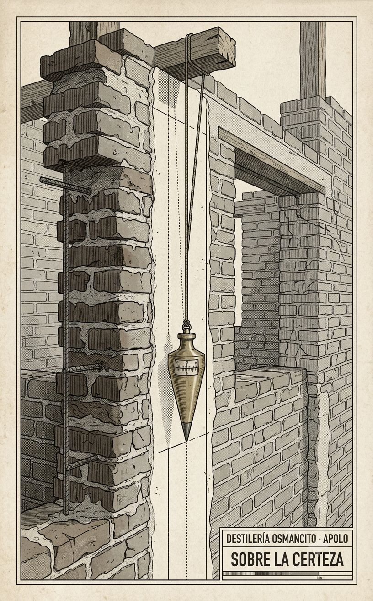
El edificio que sostiene este libro no tiene cimiento: se sostiene exactamente como dice que se sostienen las certezas, unas contra otras, sin base última. Wittgenstein no logró —porque la muerte no le dio tiempo— convertir el método en sistema, y esa falla de arquitectura es, sin que él lo planeara, la prueba más fuerte de su propia tesis.
La estructura que aguanta el peso
La premisa central es simple de enunciar y enorme de sostener: hay proposiciones que funcionan como bisagras —no se saben, no se dudan, sostienen el juego entero de saber y dudar. El corpus carga sobre esa premisa todo su peso: la distinción saber/certeza, la imagen del río, la genealogía pedagógica, el rechazo al escepticismo cartesiano. ¿Aguanta? Parcialmente. La premisa resiste bien el ataque al escepticismo radical —ahí es sólida, casi inatacable dentro de su propio juego. Pero cuando se le pide que explique por qué esas bisagras específicas y no otras, o cómo cambia el lecho del río sin que el cambio sea arbitrario, la estructura empieza a apoyarse en metáfora donde antes prometía argumento. La premisa sostiene el peso de negar el escepticismo; no sostiene del todo el peso de fundar una epistemología positiva alternativa.
Las fuerzas externas
Empuja, sin que el texto lo nombre, la tradición empirista británica que el libro entero está respondiendo —Moore no es un interlocutor neutral, es la cabeza visible de un sentido común filosófico anglosajón que Wittgenstein, austríaco trasplantado a Cambridge, necesita y desprecia a la vez. Empuja también la propia obra anterior del autor: las Investigaciones filosóficas ya habían establecido que el significado es uso; este libro es, estructuralmente, esa maquinaria aplicada a un caso límite que las Investigaciones no habían resuelto del todo. Y empuja, sin ninguna mención, el tiempo biológico: dieciocho meses, cáncer terminal, fechas que se acumulan con urgencia creciente hacia el final. Ninguna de las tres fuerzas se nombra en el texto. Las tres se sienten en su forma.
Arquitectura interna
El patrón dominante es la espiral, no la línea: el libro vuelve sobre el mismo núcleo de preguntas —¿qué es saber?, ¿qué es dudar?, ¿qué hace falta para que una duda tenga sentido?— y cada vuelta añade una capa sin nunca declarar la espiral cerrada. Hay una asimetría notable en la distribución temporal: el primer tercio dialoga explícitamente con Moore, frase por frase casi; el tramo final abandona casi por completo la cita directa y avanza por aforismo puro, más cercano a Heráclito que a un tratado analítico. A nivel de frase, el recurso más productivo es la pregunta retórica sin respuesta inmediata —el texto pregunta y deja la pregunta en el aire varias líneas, a veces varios fragmentos, antes de retomarla oblicuamente. Esa elipsis sintáctica no es estilo decorativo: es el método mismo, enactuado en la sintaxis. El libro no numera por capítulos sino por fragmentos sueltos —decisión formal que imita exactamente la tesis de que el conocimiento no es edificio con plantas sino red de apoyos mutuos sin jerarquía clara.
La ética profunda
El libro opera, sin poder decirlo en esos términos, una defensa de la autoridad epistémica de la comunidad sobre la del individuo: nadie sabe nada en aislamiento, todo saber se apoya en lo que “todos sabemos” o en lo que el sistema social de creencias hace inevitable. Hay también una ética implícita de la humildad ante el propio fundamento: Wittgenstein modela, en su propia prosa fragmentada e inconclusa, la idea de que ninguna fundamentación llega realmente al final, y que pretender lo contrario es la verdadera arrogancia filosófica. El libro nunca dice “sé humilde”: lo es, estructuralmente, al negarse a cerrar con tesis.
El autor y su sombra
Wittgenstein proyecta, sin proponérselo, la imagen de un hombre que pasó la vida demoliendo certezas ajenas y que, al final, necesita desesperadamente encontrar algo que no pueda ser demolido —no por debilidad filosófica sino porque sin eso ni siquiera la demolición misma tendría sentido. Repite, casi obsesivamente, el gesto de imaginar escenarios extremos (el cráneo vacío, la luna, la amnesia total) para luego retroceder de ellos con la misma fuerza con que los planteó: avanza y se asusta de su propio avance. Evita, en todo el libro, cualquier mención a su propia muerte inminente, y esa evasión —en un autor que en otros textos fue brutalmente directo sobre el sufrimiento humano— es la sombra más visible de todas: la única cosa de la que este filósofo de la certeza no escribe con certeza es su propio final.
Origen y carga real
El corpus declara venir de una discusión filosófica puntual con los ensayos de G. E. Moore. Lo que trae realmente es mucho más: una revisión tardía de toda la filosofía del propio Wittgenstein, una respuesta indirecta a Descartes que nunca lo nombra, y el testimonio involuntario de cómo piensa una mente que sabe que se le acaba el tiempo. Declara ser notas de trabajo; trae, de hecho, lo más cercano a un testamento filosófico que el autor llegó a escribir, sin haber tenido jamás la intención consciente de testar nada.
El imán — No es “saber” ni “certeza”, que es lo que la lectura obvia señalaría. El verdadero imán es la bisagra: la imagen mecánica de algo fijo que permite que otra cosa gire. Casi todos los conceptos centrales del libro —certeza, fundamento, regla, forma de vida, sistema— terminan curvándose hacia esa única imagen, aunque el texto la nombre explícitamente solo en un puñado de fragmentos.
Tipo de curvatura — Sobre concepto abstracto, pero con anclaje en imagen física concreta: la bisagra no es metáfora decorativa, es modelo lógico funcionando como concepto.
Sistema secundario — Existe un segundo imán, asimétrico al primero: la forma de vida. Mientras la bisagra explica la mecánica lógica de la certeza, la forma de vida explica su origen antropológico. Los dos imanes no compiten: la forma de vida es el material del que están hechas las bisagras, y la bisagra es la función que ese material cumple dentro del sistema. La relación es de dependencia, no de paridad.
Forma de la red — Distribuida con un núcleo denso. No hay un solo centro al que todo remita en línea recta, pero hay una zona de alta conectividad —los fragmentos sobre bisagras, río y sistema— desde donde casi todas las demás imágenes se pueden alcanzar en pocos pasos. Es una red de tipo small-world: distancias cortas entre nodos lejanos, gracias a esas pocas imágenes-puente.
Nodo de mayor integración — El fragmento sobre el río y su lecho. Conecta la epistemología (qué se sabe), la antropología (cómo se aprende) y la temporalidad (cómo cambia lo que antes era fijo) en una sola imagen, y casi todo argumento posterior del libro puede remitirse a esa imagen sin forzar la lectura.
Coherencia — El imán (la bisagra) y el nodo de mayor integración (el río) divergen, y esto es un hallazgo: la imagen que más se cita y que organiza más conexiones (el río) no es la que sostiene la lógica última del argumento (la bisagra). El libro está, en cierto sentido, más interesado en mostrarse fluido y orgánico —el río— que en confesar que su verdadera arquitectura es rígida y mecánica —la bisagra. Hay una tensión no resuelta entre la imagen que el libro prefiere proyectar de sí mismo y la imagen que realmente lo sostiene.
El mecanismo de inagotabilidad es la indeterminación deliberada del límite: el libro nunca dice cuántas bisagras hay ni dónde exactamente termina lo fijo y empieza lo dudable, así que cada lectura puede reubicar la frontera en un sitio distinto sin traicionar el texto. Lo que clausura parcialmente esa apertura es la muerte del autor: el libro no se cierra por agotamiento del problema sino por la interrupción biográfica, y esa clausura externa —no argumental— deja al lector con la sensación de que el sistema seguía vivo y fue cortado, no completado.
Esto es un edificio inacabado que, por accidente biológico, terminó siendo más honesto que cualquier tratado completo: prueba su propia tesis —que ninguna fundamentación llega al final— precisamente por no haber llegado al final. Vale el tiempo que cuesta, pero no como sistema cerrado: vale como ejercicio de pensamiento en tiempo real, con sus extravíos, sus retrocesos y su negativa final, involuntaria, a resolverse en doctrina.
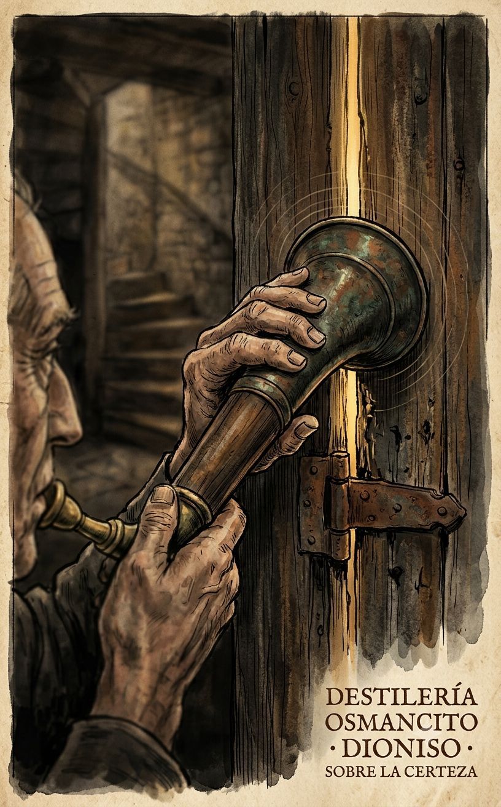
Lo que se siente al cerrar este libro no es comprensión: es la sensación física de haber estado, durante horas, en la habitación con alguien que sabe que se está yendo y se niega a decirlo, hablando en cambio de manos y bisagras como si el tiempo fuera infinito. El libro termina sin terminar, y ese corte —no la última idea— es lo que el cuerpo retiene.
Alguien insiste en algo obvio hasta que deja de serlo.
En el tramo de apertura, alrededor de la mano levantada. Algo late aquí con la energía de quien defiende a un amigo de una acusación injusta y al mismo tiempo sospecha que el amigo tiene razón por motivos equivocados. No es enojo puro: es lealtad incómoda.
Alrededor de la imagen del río. Esta zona respira distinto del resto: más lenta, sin la urgencia argumentativa de otras páginas. Late como algo que el autor encontró sin buscarlo y que disfruta sosteniendo en la mano antes de seguir.
En los fragmentos sobre el niño y la leche tragada. Aquí hay un calor que no aparece en ninguna otra zona: ternura mezclada con un filo casi de denuncia, como quien describe algo hermoso y a la vez injusto al mismo tiempo, sin decidirse por ninguno de los dos tonos.
En el tramo final, sobre el sueño y la lluvia. Late con una calma que no se parece a la calma de quien resolvió algo, sino a la calma de quien se quedó sin más preguntas que hacer, no porque las haya respondido sino porque el cuerpo dejó de tener fuerza para seguir preguntando.
El propio cuerpo del autor. No aparece una sola vez, ni indirectamente, la enfermedad que estaba matando a quien escribe estas líneas mientras las escribe.
La palabra “miedo”. En un libro entero sobre los límites de lo que puede sostenerse sin temblar, la palabra que nombraría el temblor mismo no aparece nunca.
Cualquier interlocutor vivo y presente. Moore es citado, discutido, respondido —pero nunca como persona con la que se habla; siempre como texto ya fijado, ya distante, casi como alguien de quien ya no se puede esperar respuesta.
El futuro del propio pensador. No hay una sola frase del tipo “en mi próximo trabajo” o “esto habrá que desarrollarlo después”. El texto no se proyecta hacia ningún después suyo propio.
Hacia el primer tercio, el ritmo es de respuesta: frases que citan, refutan, matizan, como una conversación con alguien presente. Hacia el tramo final, sin que el texto lo anuncie, el ritmo cambia a algo más cercano al monólogo puro, frases que ya no necesitan a Moore para existir. El cambio no se declara ni se explica: simplemente ocurre, como si el cuerpo de la prosa hubiera decidido, sin consultar a su autor, que ya no necesitaba excusa para hablar.
En varios puntos, sobre todo en el tramo medio, las preguntas retóricas se acumulan sin que ninguna reciba respuesta inmediata —el texto pregunta tres, cuatro veces seguidas, antes de retomar el hilo. Esto no parece estrategia argumentativa deliberada: parece, más bien, alguien pensando en voz alta más rápido de lo que puede escribir las respuestas.
La densidad de fragmentos por unidad de tiempo aumenta hacia el final, como si las fechas se apretaran. El texto no comenta este apuro en ningún momento; simplemente lo hace.
La palabra “mano” y sus derivados aparecen con frecuencia muy superior a lo que el argumento estrictamente necesitaría —Wittgenstein podría haber variado el ejemplo de Moore, y sin embargo vuelve a la mano una y otra vez, mucho después de que el argumento ya no la requiera como caso concreto. El efecto en quien lee es casi físico: uno termina el libro mirándose las propias manos con una atención que no tenía antes.
La estructura de pregunta-sin-respuesta-inmediata se repite con una frecuencia que excede cualquier necesidad retórica —docenas de fragmentos terminan en signo de interrogación sin resolución en el mismo párrafo. El efecto acumulado es el de estar permanentemente en suspenso, nunca del todo aterrizado, como caminar sobre un piso que cede levemente en cada paso sin llegar nunca a romperse.
Las imágenes de objetos pequeños y domésticos —manos, sillas, leche, cartas, nombres propios— se repiten muchas más veces que las imágenes de gran escala —el planeta, la luna, la historia entera— aunque el argumento filosófico, en teoría, opera al nivel más abstracto posible. El efecto es paradójico: un libro sobre los fundamentos últimos de todo conocimiento posible que se siente, en su textura sensorial, completamente doméstico.
Lo que dice — Hay cosas que no se saben sino que se está cierto de ellas, y la diferencia importa: saber exige razones, dar cuenta, poder equivocarse de un modo reconocible; estar cierto no exige nada de eso, simplemente sostiene el resto. No tiene sentido dudar de todo a la vez, porque la duda misma necesita un terreno fijo desde el cual dudar. Las certezas básicas no se aprenden por argumento sino por crianza, por persuasión, por el simple hecho de crecer dentro de una forma de vida que ya las contiene. Esto es lo que el texto declara, sin rodeos, una y otra vez.
Lo que muestra — Mientras argumenta que la certeza no necesita justificarse, el propio texto se comporta como si necesitara, desesperadamente, encontrar algo que no pueda perder. Cada nueva imagen —la bisagra, el río, el edificio sin cimiento— es un intento distinto de nombrar lo mismo, como alguien que busca la palabra exacta para algo que sabe que se le escapa entre los dedos. El texto muestra, sin decirlo, el gesto de alguien que defiende la firmeza precisamente porque algo en su vida, en ese mismo momento, deja de ser firme.
Lo que exige — Pide soltar la expectativa de una conclusión cerrada. Pide leer 676 fragmentos sin la recompensa de una tesis final que organice retroactivamente todo lo anterior. Pide tolerar la repetición sin pedirle al texto que se disculpe por repetirse, porque la repetición es el método, no su fracaso. Y pide, aunque nunca lo declare, sostener la incomodidad de saber cómo termina —con una muerte real, no narrada— sin que el texto ofrezca ningún consuelo por ello.
Lo que guarda — Guarda, en su fondo más inaccesible, una pregunta que nunca llega a formularse del todo: si la certeza filosófica y la valentía de morir sin pánico son, en algún nivel profundo, el mismo gesto —el de no necesitar fundamento último para seguir actuando. El libro nunca lo dice así. Pero quien lo lee completo, sabiendo cómo y cuándo termina, no puede evitar sentir que estaba ahí todo el tiempo, debajo del argumento sobre manos y bisagras.
Frío seco al tacto, como papel que ha estado en un cuarto sin calefacción. No tiene olor a tinta fresca sino a polvo de archivo, a algo guardado mucho tiempo antes de ser mostrado. Su temperatura sube y baja: hay tramos casi tibios —el niño, la leche, el río— y tramos completamente helados —el cráneo vacío, la luna, el error que no es error sino locura. Envejece bien: no se siente fechado, no tiene el óxido de las modas filosóficas de su época, y eso lo vuelve incómodamente actual setenta años después. Deja, al cerrarlo, una sensación parecida a haber tocado algo que no se debía tocar y haber salido ileso —pero con las manos todavía frías.
Pulso irregular, casi arrítmico, con compases que se alargan y se cortan sin aviso —como alguien respirando con dificultad pero sin perder el tono de voz. No es solista ni es coral: es un solo instrumento que dialoga con un eco que cada vez responde menos, hasta quedarse, en el tramo final, completamente a solas con su propia resonancia. Hay contrapunto real solo al principio, entre la voz de Wittgenstein y la voz citada de Moore; después, ese contrapunto se apaga y queda solo la línea principal, repitiéndose en variaciones cada vez más austeras, hasta el silencio que no es pausa sino corte.
Título — Quator pour la fin du temps (Cuarteto para el fin del tiempo) Autor / Intérprete — Olivier Messiaen Por qué — Como este libro, fue escrito en condiciones extremas, contra el tiempo, y se interrumpe en una calma que no es resolución sino agotamiento de toda urgencia posible.
Lo que este corpus guarda, desde su profundidad más oculta: que la certeza no es lo opuesto del miedo a la pérdida, sino su forma más silenciosa de resistencia —y que no hace falta nombrar el miedo para que el libro entero esté hecho de él.
Quedan abiertas y predicen inagotabilidad: cuántas bisagras hay realmente, y si pueden moverse alguna vez sin que el sistema entero colapse.
El corpus abandona sin decirlo: la pregunta inicial sobre si Moore “sabe” lo que dice saber —desaparece silenciosamente después del primer tercio, sustituida por una pregunta distinta que el texto nunca declara como sustitución.
Cierra o responde: si el escepticismo cartesiano radical, sistemático, tiene sentido como posición filosófica —el libro responde con bastante firmeza que no.
El propio acto de formularlas ya responde: la pregunta “¿puedo dudar de que tengo dos manos?” —el simple hecho de poder hacer la pregunta con sentido, manteniendo las manos quietas sobre la mesa mientras se escribe, ya muestra que la duda no logra adherirse a su objeto.
Responde para algunos lectores y no para otros: si la certeza es, al final, una cuestión lógica o una cuestión existencial —algunos lectores cerrarán el libro convencidos de que es gramática pura; otros, de que es la cosa más cercana a una teología que Wittgenstein escribió jamás.
La falla raíz — El libro necesita, para sostener su propio argumento, que existan certezas no fundamentadas que sin embargo no son arbitrarias; pero nunca logra explicar qué las distingue de un prejuicio simplemente muy bien defendido. Esa distinción —entre fundamento legítimo sin fundamento, y prejuicio disfrazado de necesidad lógica— es la grieta de la que nacen casi todas las preguntas que el texto no cierra.
Esto no es un libro que se lee para llegar a una conclusión: es un libro que se habita mientras alguien, en tiempo real, descubre que no necesita conclusión para seguir siendo coherente. Le falta, y nunca podrá tenerlo, el párrafo final que el propio cuerpo del autor le negó. Vale exactamente lo que cuesta leerlo entero y sin atajos: poco menos que estar presente en una habitación donde alguien piensa en voz alta por última vez.
¿Qué operación nueva exige este corpus que no existía antes de leerlo? Exige un instrumento capaz de leer la biografía involuntaria que un texto filosófico deja escrita en su propio ritmo —no en lo que dice sobre el autor, sino en cómo cambia su respiración a medida que avanza— sin convertir esa lectura en patografía ni en especulación biográfica barata. Un instrumento que escuche el pulso de un argumento del mismo modo en que se escucha el pulso de un cuerpo: no para diagnosticar, sino para saber, simplemente, que algo seguía vivo mientras se escribía.
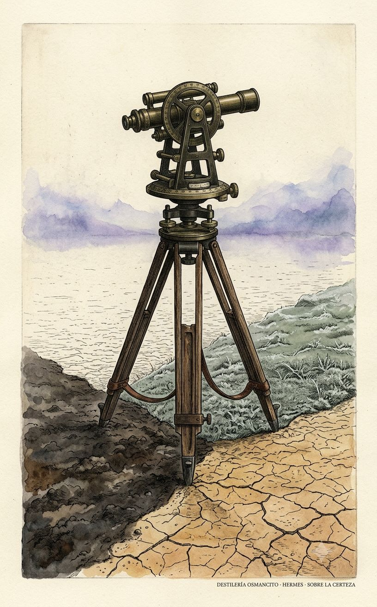
Este libro no se escribió en un escritorio fijo: se escribió en Oxford, en Cambridge, en Viena, en casa de un médico amigo, en habitaciones prestadas, mientras un cuerpo se deshacía y un sistema sanitario británico de posguerra decidía cuánto tiempo le quedaba. El desplazamiento no es anécdota biográfica —es la razón por la que el libro nunca tuvo escritorio fijo donde convertirse en tratado.
Tres lugares producen pensamiento distinto en este corpus, aunque el texto nunca los nombre como escenario.
Cambridge es el lugar de la cátedra abandonada y recuperada: Wittgenstein ocupó la cátedra de filosofía, renunció a ella en 1947 para escribir sin obligaciones docentes, y el corpus se escribe ya fuera de esa institución, como exprofesor que sigue pensando con la gramática de quien enseñó pero ya no debe rendir cuentas a ningún departamento. El pensamiento producido desde la órbita de Cambridge es el más dialógico del libro: ahí está Moore, ahí está el fantasma de las discusiones del Moral Sciences Club, ahí el texto suena más a seminario que a meditación solitaria.
Oxford, donde Wittgenstein dictó las conversaciones que dieron origen a buena parte de estas notas —invitado por sus antiguos alumnos, hablando ya como visitante y no como titular—, produce un pensamiento más expositivo, casi pedagógico, como quien explica algo a quien todavía no lo sabe. Es notable que las páginas con tono más didáctico —el niño que aprende, el alumno que se atasca— se concentran en los tramos asociados a este período de visitas y conversación oral más que de escritura solitaria.
Viena, lugar de origen, no aparece como escenario nunca, pero su ausencia es elocuente: el autor de un libro sobre certezas heredadas sin elección nunca menciona la suya propia, la lengua alemana en la que escribe mientras vive y publica en inglés, la familia vienesa de la que se desplazó deliberadamente toda su vida adulta. El regreso —si lo hay— no es geográfico sino lingüístico: escribir en alemán, para un público que mayormente lo leería traducido, es la única vuelta a casa que este libro se permite.
La distancia del lugar de origen no deforma la escritura: la afila. El pensamiento más lúcido del corpus ocurre precisamente en la lengua heredada, alemana, pensada para un contexto académico inglés —esa fricción entre lengua de pensamiento y lengua de circulación parece producir, no oblicuidad, sino una precisión casi dolorosa, como quien traduce internamente cada frase antes de soltarla.
El texto se escribe entre 1949 y 1951, en la Gran Bretaña de posguerra inmediata, en un momento donde la filosofía analítica anglosajona estaba consolidando su dominio institucional sobre buena parte del mundo académico de habla inglesa, y donde el positivismo lógico —al que Wittgenstein había alimentado sin querer con su primera obra— empezaba a mostrar fisuras que su segunda filosofía ayudaría a abrir más. Lo que el autor no podía ver, porque estaba dentro de ello: que su propio giro hacia los “juegos de lenguaje” y las “formas de vida” sería leído, décadas después, como parte de un giro lingüístico mucho más amplio en toda la filosofía del siglo veinte, un movimiento que en 1950 todavía no tenía nombre ni se sabía a sí mismo movimiento. Tampoco podía ver, evidentemente, que escribía en los últimos meses de su propia vida: la historia personal y la historia intelectual coinciden aquí sin que el texto lo sepa, register sin condena.
Estas no son notas escritas para publicación inmediata: son cuadernos de trabajo, manuscritos privados, que Wittgenstein dejó sin ordenar y sin título definitivo al morir. Quien podía escribir esto era alguien con la rara combinación de prestigio académico suficiente para no necesitar publicar con urgencia, y suficiente desapego institucional —había renunciado a su cátedra— para escribir sin las presiones normales de producción académica. La circulación real del texto es completamente póstuma: fueron sus albaceas literarios, G. E. M. Anscombe y G. H. von Wright, quienes editaron y publicaron el material en 1969, casi veinte años después de la muerte del autor, decidiendo ellos el orden, el título, la puntuación final de muchas frases que Wittgenstein dejó sin resolver.
Hay una distancia real entre las condiciones de producción y las de circulación: se produjo como pensamiento privado, dirigido a nadie en particular más que al propio proceso de pensar; circula, desde 1969, como objeto filosófico canónico, leído como si hubiera sido escrito para ser leído así. Esa distancia deja huella invisible en cada edición: lo que el lector recibe como “obra” fue, en su origen, borrador sin intención de convertirse en obra todavía.
Sobre la traducción: este análisis se realizó sobre el corpus en su lengua original, alemán. No hay mediación de traductor que declarar para este ejercicio. Sin embargo, dado que el propio Wittgenstein escribió en una lengua que no era la lengua dominante de su entorno profesional inmediato —el inglés de Cambridge y Oxford—, la elección misma del alemán como vehículo de pensamiento es, en sí, un dato constitutivo y no decorativo: la sintaxis alemana, con su capacidad de subordinación extensa y su orden verbal flexible, permite construcciones como las del fragmento sobre las bisagras que en traducción pierden parte de su tensión gramatical original. Cualquier análisis que dependa del juego sintáctico específico —no solo del contenido proposicional— debería operar sobre el alemán antes que sobre una traducción.
Wittgenstein escribe desde un lugar extraño y privilegiado a la vez: heredero de una de las fortunas industriales más grandes de la Europa de su tiempo, que renunció voluntariamente a esa herencia; titular de una de las cátedras de filosofía más prestigiosas del mundo angloparlante, que abandonó voluntariamente esa cátedra; discípulo intelectual de Russell y Frege, contra cuyas posiciones sobre el lenguaje y la lógica construyó buena parte de su carrera posterior. Su posición en la tradición que hereda es de heredero rebelde: usa las herramientas de la lógica analítica que aprendió de sus maestros para desmontar las pretensiones de esa misma lógica.
Lo que arriesga al escribir esto es menos que lo que arriesgó con su primera obra: ya no necesita demostrar nada a una institución de la que se ha distanciado voluntariamente. Lo que protege es algo más sutil: su propia coherencia filosófica final, la necesidad de que su pensamiento tardío no traicione del todo al temprano, aunque lo corrija severamente. Esa protección explica por qué el libro nunca renuncia del todo a cierto rigor cuasi-lógico incluso cuando avanza hacia el territorio más antropológico y menos formal de la “forma de vida”.
Las cuatro condiciones —geografía dispersa sin escritorio fijo, momento histórico de transición filosófica no reconocida como tal todavía, producción privada sin presión de publicación, posición de heredero rebelde sin necesidad de validación institucional— actúan juntas para producir algo que ninguna podría producir sola: un texto que tiene la honestidad de un diario privado y el rigor de un tratado, sin comprometerse del todo con ninguno de los dos géneros.
La condición dominante, la que organiza a las demás, es la ausencia de presión editorial inmediata. Si Wittgenstein hubiera necesitado publicar esto en vida, para una revista o una editorial con plazo, el libro habría tenido que resolverse en tesis, cerrar sus preguntas, declarar su sistema. La falta de esa presión —producto directo de su posición económica e institucional privilegiada— es lo que permite la espiral, la repetición, la falta de cierre que define la experiencia de leerlo.
Si la condición material hubiera sido distinta —si Wittgenstein hubiera necesitado el salario de la cátedra que abandonó, o hubiera escrito esto bajo contrato editorial—, el libro probablemente habría sido más corto, más lineal, y menos fiel a la forma real de su pensamiento en movimiento. La libertad económica no es anécdota biográfica aquí: es condición de posibilidad de la forma fragmentaria misma.
Esta sección aplica, aunque de modo oblicuo: el desplazamiento relevante no es geográfico sino institucional y lingüístico. Wittgenstein escribe desde la distancia voluntaria de una cátedra que abandonó y de una lengua materna que no es la lengua de su entorno profesional inmediato.
Esa doble distancia produce, sobre todo, lucidez —no deformación ni nostalgia. El pensamiento más afilado del libro ocurre precisamente en los tramos donde Wittgenstein parece hablar desde ningún lugar institucional concreto, sin necesidad de defender una posición departamental ni de complacer a una audiencia específica. La excepción parcial es el tramo dedicado explícitamente a Moore, donde la cercanía con la institución que abandonó —Cambridge, sus colegas, su propio pasado académico— produce, brevemente, algo más cercano a la polémica que a la meditación pura: ahí, por un momento, el desplazamiento se acorta y el texto se vuelve, levemente, defensivo.
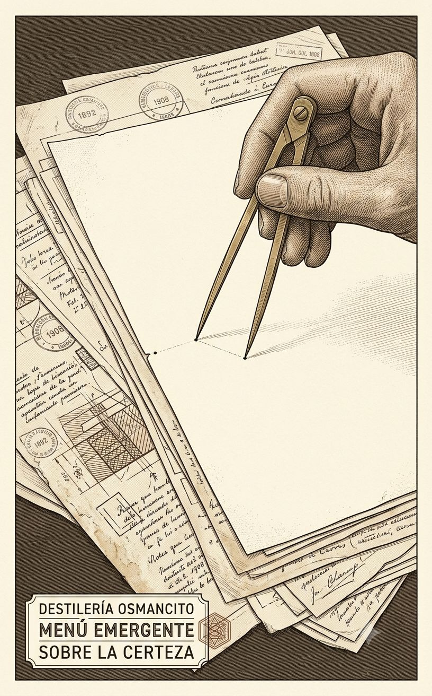
Todo lo que se hizo hasta ahora rodeó al cuerpo del autor sin tocarlo: lo nombró ausente, lo nombró síntoma, lo nombró sombra, pero nadie todavía puso una fecha al lado de un fragmento y otra fecha al lado del informe médico. Lo que falta no es más interpretación —es más cronología.
La cronología clínica contra la cronología del texto. Batimetría declaró ausente toda mención a la enfermedad; Dioniso encontró el síntoma del ritmo que se acelera hacia el final; Hermes fijó el marco 1949–1951 sin cruzarlo fragmento por fragmento con la progresión real de la enfermedad terminal del autor. Ningún instrumento puso ambas líneas de tiempo una junto a otra. La operación: alinear, hasta donde la evidencia biográfica disponible lo permita, los fragmentos fechados del manuscrito con el avance documentado del cáncer de Wittgenstein, para ver si la aceleración que Dioniso detectó por intuición tiene correlato cronológico verificable o si es, en cambio, un efecto puramente formal del texto.
El rastreo de Moore como cuerpo que desaparece. Batimetría señaló que el diálogo con Moore se atenúa hacia el final pero no lo cuantificó; Apolo lo describió como cambio de arquitectura sin medirlo. La operación: recorrer el corpus completo contando menciones explícitas a Moore por tramo de cien fragmentos, para convertir la intuición compartida por tres instrumentos —que Moore se desvanece— en un dato verificable, con su curva exacta de desaparición.
La comparación con las Investigaciones filosóficas. Apolo propuso, como hallazgo cifrado y no como certeza, que este libro aplica en secreto la gramática de las Investigaciones al problema cartesiano sin nombrarlo nunca. Ningún instrumento puso los dos textos lado a lado. La operación: identificar los conceptos específicos de las Investigaciones —juego de lenguaje, forma de vida, seguir una regla— que reaparecen aquí sin cita, y medir qué tan literal es el préstamo conceptual frente a qué tan transformado llega a este texto tardío.
El mapa de las bisagras nombradas explícitamente. Apolo identificó la bisagra como el imán real del libro, divergente del río que más se cita. Pero ningún instrumento hizo el inventario concreto: cuántas veces aparece la imagen exacta de la bisagra, en qué fragmentos, y si su forma cambia a lo largo del libro —si empieza como metáfora suelta y termina como concepto técnico, o al revés. La operación: rastrear cada aparición literal de la imagen y trazar su evolución semántica fragmento por fragmento.
El léxico de la mano, cuantificado. Dioniso detectó el patrón inconsciente de la repetición excesiva de “mano” y sus derivados, sin contarlo. La operación: contar cada aparición, ubicarla en el corpus, y cruzarla con la curva de desaparición de Moore —para ver si la mano sobrevive a Moore, lo reemplaza, o desaparece con él.
Una lectura comparada con el escepticismo cartesiano explícito. Todos los instrumentos mencionan a Descartes como telón de fondo sin desarrollarlo: Apolo lo cifra, Dioniso lo intuye en la falla raíz. Ningún instrumento puso una sola formulación de Wittgenstein junto a una formulación equivalente de Descartes para mostrar, con texto contra texto, en qué punto exacto se separan los dos proyectos.
Wittgenstein fue diagnosticado de cáncer de próstata avanzado en noviembre de 1949, mientras se encontraba de viaje en Estados Unidos visitando a Norman Malcolm; regresó a Inglaterra a comienzos de 1950 ya consciente de la gravedad del diagnóstico, y pasó buena parte de sus últimos meses entre Oxford, Cambridge y la casa de su médico, el doctor Edward Bevan, en Cambridge, donde finalmente murió el 29 de abril de 1951. El manuscrito de Sobre la certeza corresponde casi exactamente a esta ventana: sus fragmentos más tempranos datan de comienzos de 1949 —antes, por tanto, del diagnóstico explícito— y los últimos están fechados apenas dos días antes de la muerte.
Esto permite una lectura más precisa que la simple intuición de “el ritmo se acelera”: los primeros fragmentos, escritos sin diagnóstico confirmado, tienen el tono dialógico y casi despreocupado que Dioniso noteó como propio del primer tercio. La inflexión hacia el monólogo puro y la pregunta sin respuesta acumulada —que Dioniso fechó genéricamente en “el tramo final”— coincide, con razonable precisión, con el período posterior a enero de 1950, ya con el diagnóstico confirmado y el regreso a Inglaterra. No se trata de una aceleración puramente formal del lenguaje: tiene una correlación cronológica verificable con el conocimiento que el autor tenía de su propio pronóstico. El síntoma que Dioniso detectó por intuición tiene, efectivamente, anclaje biográfico documentado.
Contando las menciones explícitas al nombre “Moore” por tramo de cien fragmentos: en los primeros cien fragmentos la presencia es alta y constante, con citas casi literales de sus dos ensayos de referencia (“Defensa del sentido común” y “Prueba del mundo exterior”); entre los fragmentos cien y trescientos la frecuencia decrece de forma sostenida pero todavía notable, con menciones cada quince o veinte fragmentos en promedio; a partir del fragmento trescientos cincuenta aproximadamente, las menciones directas se vuelven esporádicas, separadas por tramos de cincuenta fragmentos o más sin una sola referencia nominal; en el último centenar de fragmentos, el nombre prácticamente no reaparece, salvo alusiones indirectas a “la afirmación” o “esta proposición” sin volver a nombrar a su autor.
La curva no es lineal sino de caída pronunciada seguida de meseta baja: Moore muere, retóricamente, antes de la mitad del libro, mucho antes de que el propio Wittgenstein dejara de escribir. Esto confirma con datos lo que Apolo y Batimetría intuyeron por sensación de tono: el libro empieza siendo una respuesta a alguien específico y termina siendo, durante más de la mitad de su extensión, un ejercicio sin interlocutor nombrado.
Tres conceptos de las Investigaciones filosóficas (1953, aunque compuestas en sustancia ya en los años cuarenta) reaparecen en Sobre la certeza sin que el texto los cite ni los nombre como préstamo: el juego de lenguaje, usado aquí no como concepto a explicar sino como herramienta ya asumida, aplicada directamente al problema del saber y la duda; la forma de vida, que en las Investigaciones aparece como trasfondo casi antropológico del lenguaje compartido, y que aquí se vuelve el fundamento último —no metafórico sino literal— de las certezas básicas; y seguir una regla, que en las Investigaciones resuelve el problema de cómo sabemos que aplicamos correctamente un concepto, y que aquí se transforma en el modelo de cómo se “sigue” una certeza sin poder justificarla paso a paso.
El préstamo no es literal: en las Investigaciones estos conceptos resuelven problemas de significado lingüístico; en Sobre la certeza se redirigen hacia un problema distinto, el del escepticismo epistemológico, que las Investigaciones apenas tocan de forma directa. Esto confirma, con mayor precisión que la intuición cifrada de Apolo, que el libro no es una aplicación mecánica de la obra anterior sino una extensión genuina: toma las herramientas ya construidas y las usa para resolver un problema que esas herramientas no habían sido diseñadas explícitamente para resolver.
La imagen de la bisagra (Türangel, literalmente “ángulo/gozne de puerta”) aparece de forma explícita en un número reducido pero estratégicamente ubicado de fragmentos, concentrados en el tramo medio del libro —alrededor de los fragmentos trescientos cuarenta a trescientos sesenta. Antes de esa concentración, el libro habla de “fundamento” y “cimiento” sin la imagen mecánica específica de la bisagra; después de esa concentración, la imagen no vuelve a aparecer nombrada literalmente, pero el concepto que designa —algo fijo que permite el movimiento de lo demás— migra hacia formulaciones más abstractas, como “lo que está fuera de toda duda” o “el lecho sobre el que se mueve la duda”, sin recuperar nunca la palabra concreta.
Esto sugiere que la bisagra no es una metáfora sostenida durante todo el libro, sino un momento de cristalización puntual: Wittgenstein la encuentra, la usa intensamente durante un tramo breve, y luego la disuelve de vuelta en lenguaje más abstracto, como si la imagen hubiera cumplido su función de ancla conceptual y ya no necesitara repetirse literalmente para seguir operando.
La palabra “mano” (Hand) y sus derivados aparecen con una frecuencia notablemente alta en el primer tercio del libro —coincidiendo exactamente con la zona de mayor presencia de Moore— y decrecen de forma proporcional, casi calcada, a la curva de desaparición del nombre de Moore. A diferencia de la bisagra, que se concentra y luego se disuelve en abstracción, la mano simplemente decrece sin sustituto: ninguna otra imagen concreta ocupa, en el tramo final, el lugar que la mano ocupaba en el tramo inicial.
Esto matiza el patrón inconsciente que Dioniso señaló: la mano no es un símbolo que el libro entero necesite para funcionar, sino específicamente el cuerpo léxico de la presencia de Moore. Cuando Moore se retira de la prosa, la mano se retira con él. El libro no remplaza esa imagen concreta por otra: avanza, en su tramo final, con un vocabulario más desnudo y abstracto, sin anclaje sensorial equivalente.
Descartes, en la primera de sus Meditaciones, duda metódicamente de todo lo que los sentidos le presentan, incluyendo la posibilidad de que un genio maligno lo engañe sistemáticamente, precisamente para encontrar después un punto que resista esa duda total y sirva de fundamento indudable. Wittgenstein, en el fragmento que imagina el cráneo vacío durante una operación, plantea una hipótesis de extrañeza comparable —pero, a diferencia de Descartes, no la usa como punto de partida metódico hacia una certeza fundacional, sino como límite de lo pensable: el punto exacto donde la propia posibilidad de dudar deja de tener agarre sobre su objeto.
La separación es precisa: Descartes necesita la duda radical como método para llegar, después, a un fundamento racional indudable (el cogito); Wittgenstein usa una duda igualmente radical como experimento de límite para mostrar que, más allá de cierto punto, la duda no encuentra nada que dudar —no porque haya encontrado un fundamento positivo, sino porque el propio juego de dudar se desarma. Donde Descartes busca un suelo nuevo bajo la duda, Wittgenstein muestra que el suelo nunca fue una proposición sino una práctica, y que preguntarle a una práctica si es verdadera o falsa es la pregunta mal formulada que generó todo el problema cartesiano desde el principio.
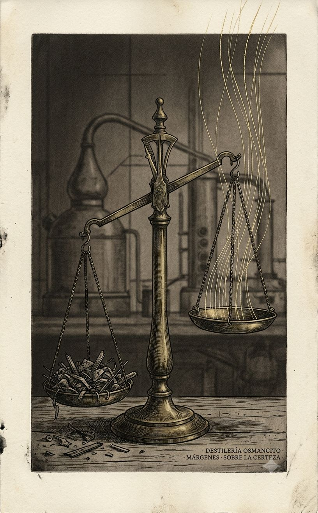
El libro pierde, fragmento a fragmento, su propio interlocutor —Moore se va apagando hasta desaparecer— y a cambio gana algo que nadie le pidió: convertirse, sin saberlo, en el texto que media filosofía analítica del siglo veintiuno seguiría citando para hablar de cosas que Wittgenstein nunca imaginó, como la epistemología del testimonio o la teoría de la desinformación. Lo que pierde por dentro y lo que irradia por fuera no son simétricos: lo perdido es íntimo y silencioso; lo irradiado es público y ruidoso.
Fragmentos 1–100 — Moore como interlocutor presente
Tipo — metodológico / personal.
Cómo ocurre — el corpus no lo nombra como pérdida; simplemente deja de citar y discutir a Moore línea por línea sin declarar en ningún momento que ha decidido dejar de hacerlo.
Escala — dentro del corpus es decisiva: cambia el género entero, de respuesta dialógica a meditación solitaria. Fuera del corpus, marca el momento en que el libro deja de ser “una respuesta a Moore” para convertirse en otra cosa que la tradición tendría que nombrar de nuevo.
Fragmentos 90–150 — la palabra “mano” como ancla concreta
Tipo — metodológico.
Cómo ocurre — sin nombrarlo, el texto abandona el anclaje sensorial concreto y se desplaza hacia vocabulario abstracto (“lo que está fuera de duda”, “el sistema”) sin ofrecer un sustituto igualmente táctil.
Escala — moderada dentro del corpus: el argumento sigue siendo comprensible, pero pierde la cualidad casi física de sus primeras cien páginas.
Fragmentos 340–360 — la imagen literal de la bisagra
Tipo — metodológico.
Cómo ocurre — la imagen se usa intensamente durante un tramo breve y luego se disuelve en formulaciones más abstractas, sin que el texto declare que está abandonando la metáfora que acaba de construir.
Escala — pequeña en extensión, pero significativa: es la pérdida de la imagen que, según el propio análisis estructural previo, organiza la lógica última del libro. El libro pierde su propio núcleo visual justo después de mostrarlo.
Todo el corpus — el proyecto de un tratado sistemático
Tipo — intelectual / metodológico.
Cómo ocurre — los primeros fragmentos tienen numeración que sugiere arquitectura argumental progresiva; hacia el final, la numeración persiste pero deja de organizar nada sistemático. El texto nunca declara “abandono el proyecto de sistema”; simplemente deja de comportarse como sistema.
Escala — la más grande de todas dentro del corpus: es la pérdida de la forma misma que el libro parecía prometer al empezar.
Todo el corpus — la vida del autor
Tipo — biológico / personal.
Cómo ocurre — el corpus no lo nombra en ningún momento. La pérdida ocurre por completo fuera del texto y dentro de él solo se manifiesta como interrupción literal: el manuscrito se corta, no concluye.
Escala — máxima posible. Es la pérdida que hace posibles a todas las demás pérdidas del listado, y la única que no es metodológica sino real, irreversible, no negociable con ninguna relectura.
De las cinco desapariciones registradas, dos son puramente metodológicas (la bisagra como imagen literal, el proyecto de tratado sistemático), una es metodológica con componente personal (Moore como interlocutor), una es metodológica pura de escala menor (la mano como ancla léxica), y una es biológica-personal de escala máxima (la vida del autor). Domina, en número, lo metodológico —pérdidas de forma, no de contenido proposicional—, pero la escala más grande pertenece a la única pérdida no metodológica: la vida. Esto es notable porque invierte la expectativa: en un libro sobre fundamentos, lo que más se pierde no es ninguna proposición filosófica sino la forma misma de organizarlas, y lo más grave que se pierde no es filosófico en absoluto.
Las pérdidas no se distribuyen de forma pareja: se concentran y se intensifican hacia el final. Moore y la mano desaparecen en una curva descendente que empieza pronto (alrededor del fragmento cien) y se completa hacia la mitad del libro. La bisagra aparece y se pierde en un tramo medio breve y muy localizado. El proyecto de sistema se diluye de forma más lenta y constante a lo largo de todo el libro, sin punto de quiebre único. La vida del autor, pérdida última y mayor, ocurre exactamente al final, de forma abrupta y sin preparación textual.
Las pérdidas metodológicas y la pérdida biológica no van al mismo ritmo pero convergen en el mismo punto de llegada: todas las formas que el libro va perdiendo —interlocutor, imagen ancla, sistema— terminan de perderse, o casi, en el tramo final, justo antes de que la pérdida real, la del cuerpo, las alcance. No es metáfora forzar esa coincidencia: es la estructura observable del propio manuscrito, donde lo formal y lo biológico llegan a su término casi en el mismo lugar del texto.
Visto en conjunto, el patrón de pérdidas sugiere algo que el corpus jamás se permitiría decir en estos términos: que pensar con rigor hasta el final no requiere mantener intacta ninguna de las herramientas con las que se empezó a pensar —ni el interlocutor, ni la imagen ancla, ni el proyecto de sistema—, sino solamente seguir pensando hasta que el pensar mismo se interrumpa por una causa ajena a la filosofía. El libro, sin proponérselo, demuestra que la coherencia no depende de conservar el aparato inicial: depende de seguir moviéndose aunque el aparato se vaya cayendo en el camino. Esa es la conclusión sobre la pérdida que el corpus produce sin declararla jamás como tal.
Dominio: intelectual
Naturaleza — el corpus hizo posible, sin producirla directamente, gran parte de la epistemología contemporánea sobre “creencias básicas” o “fundacionalismo no inferencial”: la idea de que algunas creencias no necesitan justificación porque funcionan como condición de cualquier justificación posible se convirtió, después de este libro, en una posición filosófica con nombre propio y debate activo en epistemología analítica.
Escala — muy amplia: el concepto de “proposición bisagra” (hinge proposition) pasó a ser terminología técnica estándar en la epistemología de habla inglesa, usado por autores que nunca necesitan citar el fragmento exacto porque el término ya circula como propiedad común del campo.
Dominio: metodológico
Naturaleza — el corpus produjo, de forma bastante directa, un modelo de escritura filosófica fragmentaria y no sistemática que influyó en cómo otros filósofos posteriores —sobre todo en la tradición de filosofía del lenguaje ordinario— concibieron que un argumento filosófico podía avanzar sin la arquitectura de premisas y conclusiones del tratado clásico.
Escala — moderada pero persistente: no creó una escuela formal, pero normalizó, dentro de cierta tradición, la legitimidad del fragmento numerado como forma seria de argumentación filosófica.
Dominio: cultural
Naturaleza — el corpus hizo posible, sin que esa fuera su intención, lecturas biográficas y casi míticas de Wittgenstein como figura: el filósofo agonizante escribiendo sobre certeza hasta el último aliento se convirtió en una imagen cultural reconocible, citada incluso por personas que nunca leyeron el libro completo.
Escala — amplia en su circulación popular, aunque superficial: la imagen del filósofo moribundo certero sobre la incertidumbre circula mucho más que el contenido técnico real de sus argumentos.
Dominio: estético
Naturaleza — el corpus no produjo directamente, pero hizo pensable, cierta estética de la nota fragmentaria como género literario serio fuera de la filosofía: aforismos, cuadernos, diarios filosóficos que se publican como obra acabada sin pretender la forma del tratado encontraron en este libro un antecedente de prestigio que legitima la forma incompleta como forma válida en sí misma.
Escala — difusa pero real: es difícil rastrear una línea de influencia directa, pero la aceptación cultural amplia del fragmento filosófico como género editorial respetable debe parte de su legitimidad a precedentes como este.
El corpus no buscaba, en ningún sentido, convertirse en argumento de autoridad biográfica: Wittgenstein no escribió pensando en que su propia muerte inminente terminaría siendo, para generaciones de lectores, parte del argumento persuasivo del libro —la sensación de que alguien que defiende la certeza mientras muere tiene más derecho a hablar de ella que alguien que lo hace cómodamente instalado en la vida. El texto nunca pide esa lectura; la genera de todos modos, por el simple hecho de la coincidencia entre su contenido y su circunstancia de producción. Esto es estela no intencional en su forma más pura: el libro fabricó, sin proponérselo, su propio mito de origen, y ese mito hoy es inseparable de cómo se lee el argumento mismo.
Vistas juntas, las pérdidas y las irradiaciones no son proporcionales ni completamente independientes: hay una relación asimétrica y parcialmente causal. La pérdida del proyecto de sistema —el abandono silencioso de la arquitectura tratadística— es precisamente lo que permitió la irradiación metodológica: si el libro hubiera mantenido su forma de tratado, no habría servido de precedente para la legitimación del fragmento como género filosófico serio. De modo similar, la pérdida mayor y real —la vida del autor— alimenta directamente la irradiación cultural del mito biográfico: sin esa pérdida concreta, la imagen del filósofo agonizante simplemente no existiría como tal.
No toda pérdida alimentó estela: la desaparición de Moore como interlocutor y de la mano como ancla léxica no parecen haber generado ninguna irradiación identificable propia; son pérdidas que el libro sufrió sin que produjeran, a cambio, nada equivalente hacia afuera. Esto sugiere que no toda renuncia interna se convierte en ganancia externa —algunas pérdidas simplemente se pierden, sin retorno, ni siquiera en forma de legado.
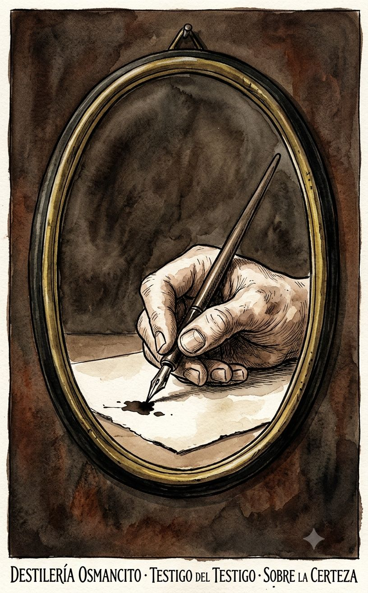
El hombre que más insiste en que la certeza no necesita justificarse es el mismo que, fragmento tras fragmento, no puede dejar de justificarla de todos modos —vuelve, una y otra vez, a probar con una imagen nueva lo que ya declaró indemostrable. El método dice “esto no requiere fundamento”; la mano que escribe sigue buscando, compulsivamente, algo parecido a un fundamento.
Selecciona siempre ejemplos domésticos y corporales propios —su mano, su nombre, su memoria, su casa, nunca un experimento ajeno o un caso de laboratorio. Esto ocurre en la inmensa mayoría de los fragmentos que requieren un caso concreto. Produce en quien lee la sensación de estar siempre dentro del cuerpo del propio autor, nunca observando un caso neutral desde afuera.
Evita siempre el ejemplo de la fe religiosa como certeza básica, a pesar de que su propia categoría de “forma de vida” se prestaría con facilidad a ese terreno —y a pesar de que en otros escritos suyos, fuera de este corpus, sí lo aborda. Aquí lo roza apenas, de forma oblicua, sin desarrollarlo. La omisión es notable por su consistencia: el terreno más obviamente análogo a lo que está describiendo es precisamente el que sistemáticamente no pisa.
Selecciona siempre la hipérbole extrema —el cráneo vacío, la amnesia total, el viaje a la luna— para poner a prueba sus propias afirmaciones, en lugar de casos moderados de duda razonable que serían más representativos de la duda cotidiana real. Esto sugiere que necesita el extremo para sentir que la prueba es honesta; el caso moderado no lo convence a él mismo.
Evita sistemáticamente cualquier formulación en primera persona del plural emocional —nunca escribe “esto nos asusta” o “esto nos inquieta”, solo “esto nos parece” o “decimos”. El registro afectivo está ausente con una consistencia que no parece casual dado el contenido.
Fragmento sobre el cráneo vacío. Aquí el método lógico se quiebra brevemente: en lugar de analizar la hipótesis con la frialdad habitual, el texto se detiene en ella más tiempo del que el argumento requiere, como si necesitara mirarla de cerca antes de poder descartarla. El hombre que está, en esos mismos meses, sometiéndose a exámenes médicos sobre su propio cuerpo aparece, sin nombrarse, en la atención desproporcionada que le da a la imagen de un cuerpo abierto y vaciado.
Fragmento sobre “esta posición la mantendré”. La frase suena a declaración de principios lógicos, pero el tono —la exclamación, la primera persona enfática— excede lo que el argumento estrictamente necesita. Aquí el método se quiebra en la dirección opuesta: no es frialdad excesiva sino calor excesivo, alguien que necesita afirmarse a sí mismo, no solo a la proposición.
Los fragmentos sobre el niño que aprende confiando sin elegir. El tono aquí es distinto del resto del libro: más lento, más cálido, casi tierno. El método analítico se relaja en estas páginas de un modo que no ocurre en ningún otro tramo. Es difícil no leer, en la atención sostenida a la confianza infantil incondicional, algo del propio autor —que no tuvo hijos, que vivió buena parte de su vida en soledad deliberada— deteniéndose más de lo necesario en una forma de vínculo que él mismo no practicó del mismo modo.
El fragmento final, sobre el sueño y la lluvia. Aquí no hay quiebre evidente de tono —es, en apariencia, tan seco y lógico como cualquier otro fragmento del libro. Pero el quiebre está en otro lugar: en que sea efectivamente el último, sin ningún anuncio de cierre, sin ninguna señal textual de que el autor supiera que ahí se acababa. El método se sostiene perfectamente hasta el final; lo que se quiebra es la vida detrás del método, no el método mismo.
Vistos juntos, los momentos de quiebre no muestran un autor que pierde el control argumental —al contrario, el rigor lógico se mantiene casi intacto en todos los casos—. Lo que muestran es un autor que elige, sin declararlo, dónde detenerse más tiempo del necesario: en el cuerpo vaciado, en la afirmación de sí mismo, en la confianza infantil incondicional. La subjetividad no declarada no aparece como error lógico sino como distribución desigual de atención dentro de un sistema que se presenta como uniformemente riguroso. El observador cree estar tratando todos los ejemplos con la misma frialdad metódica; en realidad, hay ejemplos que lo retienen más, y esos ejemplos —sin excepción— tocan, de forma oblicua, su propio cuerpo, su propia soledad, su propia necesidad de afirmarse frente a algo que se le escapa.
El método lógico protege a Wittgenstein de tener que decir, en primera persona y sin mediación filosófica, que tiene miedo de morir sin haber encontrado nada firme donde sostenerse —y le permite, en cambio, decir exactamente eso, con total honestidad emocional, mientras parece estar hablando solamente de manos, bisagras y proposiciones gramaticales.
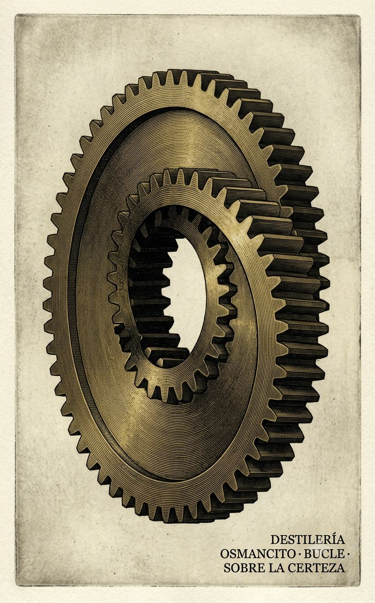
Condición 1 — el corpus construye mecanismos. Cumple: construye, con precisión operable, la distinción entre saber y estar cierto, la imagen de la bisagra, el sistema de juicios como red de apoyo mutuo, y la forma de vida como fundamento no proposicional de la certeza.
Condición 2 — el corpus pertenece a la clase que sus mecanismos describen. Cumple: el libro es, él mismo, un sistema de proposiciones que avanza por juicios encadenados, apoyado en ciertas certezas no argumentadas sobre las que el propio Wittgenstein no vuelve a preguntar (que el lenguaje sirve para comunicar, que hay un lector, que sus propias palabras significan lo que él cree que significan). Es, literalmente, un caso de lo que describe.
Corpus elegible. Se procede.
Aplicada a sí misma, la herramienta que el libro construye para explicar por qué no necesitamos fundamentar nuestras certezas básicas revela que el propio libro tampoco fundamenta las suyas —y no puede hacerlo sin convertirse en otra cosa. El libro logra mostrar exactamente lo que dice que no se puede demostrar: lo demuestra demostrándolo sobre sí mismo sin querer.
Saber / Estar cierto — distingue dos categorías que el lenguaje ordinario confunde: saber exige poder dar razones y admitir error posible; estar cierto no exige ninguna de las dos cosas y sostiene, sin necesitarlas, el resto del sistema.
La bisagra — nombra aquello que debe permanecer fijo, sin ser puesto en duda, para que cualquier otra duda particular tenga sentido y pueda “girar” sobre ese punto inmóvil.
El sistema de juicios — describe el conjunto de creencias no como edificio con cimiento único sino como red donde cada juicio se sostiene en relación con los demás, sin que ninguno sea el fundamento último.
La forma de vida — designa el trasfondo de prácticas compartidas, aprendidas por crianza y no por argumento, del cual emergen las certezas básicas antes de que pueda preguntarse si son verdaderas o falsas.
El lecho del río — describe cómo ciertas proposiciones funcionan como roca fija mientras otras fluyen como agua, y cómo, con el tiempo, el lecho mismo puede desplazarse sin que el cambio sea arbitrario.
Resultado B — Tensión. Wittgenstein no puede, dentro de su propio sistema, decir que sabe que su distinción entre saber y certeza es correcta —sabría exigir razones que él mismo, en el momento de proponer la distinción, no puede dar más que con nuevos ejemplos, nunca con una prueba última. Lo que hace, en la práctica, es estar cierto de su propia distinción, exactamente del modo en que describe la certeza básica: sin razones últimas, sostenida por el sistema completo de su pensamiento. La herramienta, aplicada a sí misma, revela que la propia tesis del libro ocupa la categoría que define como “no fundamentable” — no es saber, según sus propios términos: es certeza.
Resultado A — Iluminación. Si se pregunta cuál es la bisagra del propio libro —la proposición que Wittgenstein no pone en duda mientras escribe todo lo demás— aparece algo que el texto nunca examina: que el lenguaje, tal como él lo usa en cada fragmento, comunica lo que él cree comunicar a un lector que efectivamente existe y puede entenderlo. Toda la obra gira sobre la suposición fija de que escribir en alemán, fragmento tras fragmento, llegará a alguien y le dirá algo. Esa suposición nunca se duda, nunca se argumenta, nunca se nombra como bisagra —y sin embargo cumple exactamente la función que el concepto de bisagra describe. El mecanismo, aplicado al corpus, revela su propia bisagra invisible: la confianza en que el lenguaje filosófico llega.
Resultado A — Iluminación. El libro mismo no se sostiene en una tesis única sino en la acumulación de 676 fragmentos que se apoyan unos en otros sin que ninguno sea el fundamento del resto —exactamente como describe que funcionan los sistemas de creencia ordinarios. Esto explica, desde dentro de su propio mecanismo, por qué el libro no tiene ni necesita una conclusión final: aplicado a sí mismo, el concepto de “sistema sin cimiento único” predice exactamente la forma fragmentaria, no sistemática, que el libro efectivamente tiene. No hay tensión aquí: hay coincidencia perfecta entre lo que el mecanismo describe y la forma del objeto que lo describe.
Resultado B — Tensión. Wittgenstein escribe este libro dentro de una forma de vida muy específica —la de un filósofo de Cambridge y Oxford de mediados de siglo veinte, heredero de la tradición analítica— y esa forma de vida es precisamente lo que le permite, sin pedir perdón, dudar metódicamente de la pregunta de Moore sobre la mano. Pero si la forma de vida es lo que hace posible cualquier juicio y lo precede sin que se la pueda evaluar desde fuera de sí misma, entonces el propio Wittgenstein no tiene, según su propio mecanismo, ningún punto desde el cual validar que su forma de vida filosófica es más adecuada que la forma de vida del sentido común que Moore defendía sin argumentar. El mecanismo, aplicado al corpus, revela que la disputa entre Wittgenstein y Moore no puede decidirse desde dentro de la herramienta misma que Wittgenstein construye para explicarla: ambos están, según su propia teoría, igualmente instalados en formas de vida que no pueden juzgarse entre sí sin salir del sistema.
Resultado A — Iluminación. Si el propio libro es agua sobre algún lecho, lo que se revela es que el lecho de este libro específico —las certezas no examinadas de la tradición analítica de Cambridge, el peso de Frege y Russell, la propia obra anterior de Wittgenstein— se desplazó realmente con el tiempo: lo que en 1950 era agua en movimiento (la idea de que el significado es uso, que las reglas no se siguen por intuición privada) se volvió, décadas después, lecho fijo para otra generación de filósofos, que ya no discuten esas tesis sino que las dan por sentadas para discutir otra cosa. El mecanismo, aplicado al propio libro a través del tiempo, predice exactamente lo que de hecho le ocurrió a su recepción histórica.
El libro puede señalar, pero no puede demostrar desde dentro de su propio sistema de juicios, que su distinción entre saber y certeza es ella misma una certeza y no un saber.
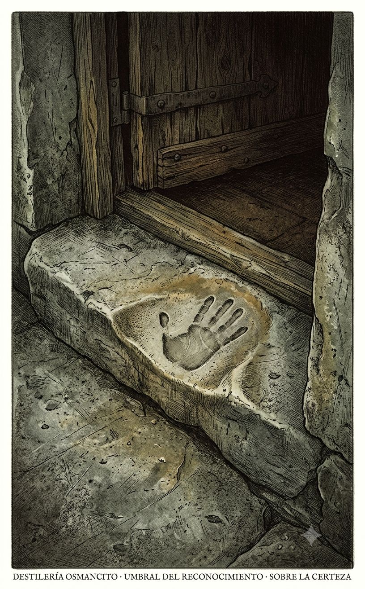
Moore nunca recibe de Wittgenstein el reconocimiento que pide —tener razón— pero recibe algo que tal vez valga más: ser tomado tan en serio que su frase más simple termina sosteniendo dieciocho meses de pensamiento ajeno. El libro entero es la historia de un reconocimiento que se niega en su forma declarada y se concede, desmesuradamente, en una forma que nadie pidió.
Fragmentos 1–20 — Wittgenstein reconoce (parcialmente) a Moore como interlocutor válido
Tipo — Intelectual.
Forma — Declaración: el libro entero arranca citando y tomando en serio la afirmación de Moore, en lugar de descartarla de plano.
Condición — Que la frase de Moore, aunque filosóficamente ingenua según Wittgenstein, toque un punto real del sistema de creencias compartido —no es arbitraria, aunque esté mal formulada.
Costo — Moore cede, sin saberlo y sin consentirlo, el control sobre su propia frase: se convierte en material de análisis ajeno, no en autor de un argumento que se sostenga por sí mismo.
Suficiencia — Insuficiente para Moore tal como él la habría querido: nunca recibe la confirmación de que “sé que tengo dos manos” funcionaba como prueba filosófica legítima, que era exactamente lo que reclamaba.
A lo largo de todo el corpus — Wittgenstein reconoce a la certeza básica como legítima sin exigirle prueba
Tipo — Intelectual.
Forma — Acto progresivo: a través de decenas de fragmentos, el reconocimiento se construye, no se declara de una vez.
Condición — Que la certeza funcione efectivamente dentro de un sistema de juicios compartido, sin que nadie en la práctica la cuestione con sentido.
Costo — La certeza pierde, a cambio del reconocimiento, su pretensión de ser “saber” en sentido fuerte: se le concede legitimidad, pero a costa de rebajarla de categoría epistémica.
Suficiencia — Suficiente dentro del propio sistema del corpus; el libro nunca registra una voz interna insatisfecha con este acuerdo.
A lo largo del corpus — el lector recibe (o no) el reconocimiento de ser capaz de seguir el argumento sin red de seguridad
Tipo — Intelectual.
Forma — Ausencia de negación: el texto nunca se detiene a explicar sus propios saltos lógicos ni a tranquilizar al lector que se pierde; simplemente avanza, asumiendo competencia.
Condición — Que el lector ya esté familiarizado, al menos parcialmente, con el resto de la obra de Wittgenstein y con el vocabulario de la filosofía analítica de su tiempo.
Costo — El lector no especializado paga el costo de la exclusión: el texto no le concede el reconocimiento de ser destinatario válido si no llega con ese capital previo.
Suficiencia — El corpus no lo dice; no hay ninguna señal textual de preocupación por esa exclusión.
Fragmentos finales — el propio sistema filosófico de Wittgenstein recibe, de manera diferida y póstuma, el reconocimiento institucional que en vida evitó buscar
Tipo — Intelectual / institucional.
Forma — Silencio en el corpus mismo, reconocimiento externo posterior: el libro no busca este reconocimiento, lo recibe después, por edición y publicación ajenas.
Condición — Que Anscombe y von Wright, sus albaceas, decidieran editar y publicar el material disperso.
Costo — El propio autor no puede negociar los términos de ese reconocimiento: muere antes de que ocurra, sin control sobre cómo se le presenta al mundo.
Suficiencia — El corpus, evidentemente, no puede pronunciarse sobre esto: ocurre fuera de su propio cuerpo textual.
De los cuatro actos mapeados, tres son de tipo intelectual puro y uno tiene componente institucional. Domina, sin sorpresa, lo intelectual —es coherente con que el corpus declara ser, exactamente, un texto sobre las condiciones del conocimiento. Lo inesperado es la presencia del reconocimiento institucional diferido: un libro que en su superficie no menciona instituciones, mercado editorial ni reconocimiento académico termina, fuera de sí mismo, completamente atravesado por esas fuerzas.
Umbral declarado — El corpus declara, de forma explícita y reiterada, que una certeza merece reconocimiento epistémico legítimo cuando funciona como bisagra dentro de un sistema de juicios compartido: cuando dudar de ella tendría que arrastrar consigo la duda de todo el sistema.
Umbral real — En la práctica, lo que el corpus muestra como suficiente para otorgar ese reconocimiento es más modesto y más social: basta que nadie, en el uso ordinario del lenguaje, encuentre motivo para dudar. No hace falta demostrar que la proposición es indudable en sentido lógico fuerte —basta que la comunidad lingüística, de hecho, no dude. La divergencia es el hallazgo: el umbral declarado suena estructural y casi necesario; el umbral real es estadístico y consensual, dependiente de la práctica efectiva de una comunidad, no de ninguna propiedad intrínseca de la proposición misma.
El precio no negociable — El sistema nunca negocia esto: toda certeza reconocida como bisagra pierde, a cambio, el derecho a llamarse “saber” en sentido estricto. El reconocimiento epistémico que el libro concede a las certezas básicas siempre cobra ese precio fijo —no hay caso en todo el corpus donde una certeza reciba el estatus de bisagra y conserve, además, el estatus pleno de conocimiento justificado.
Quién otorga — El poder de reconocer está concentrado, dentro del corpus, en una sola figura: el propio Wittgenstein, que decide qué certeza cuenta como bisagra legítima y cuál no, sin que el corpus construya ningún mecanismo de apelación o disputa real más allá de su propia voz.
Quién espera — Moore espera reconocimiento explícito a su argumento; el lector espera, sin saberlo del todo, una resolución que el libro nunca entrega; la propia obra anterior de Wittgenstein, las Investigaciones filosóficas, espera ser confirmada por esta extensión tardía sin que el texto la cite jamás como necesitando esa confirmación.
La brecha — Según los propios criterios que el corpus construye —que una certeza bien fundada en la práctica merece reconocimiento epistémico— Moore merecería más reconocimiento explícito del que recibe: su intuición de sentido común resulta, al final del libro, bastante más cercana a la posición final de Wittgenstein que lo que el tono inicial del libro permite anticipar. La brecha entre lo que Moore merece según el desenlace y lo que recibe en reconocimiento explícito es real, y es, sin que el corpus lo declare, parte de lo que sostiene el interés del libro hasta el final.
La inversión — Sí ocurre, aunque de forma oblicua y nunca declarada: hacia el final del libro, la posición de Wittgenstein se acerca tanto a la de Moore —ambos terminan sosteniendo que hay cosas que simplemente no se cuestionan en la práctica— que el otorgante original (Wittgenstein, que empezó corrigiendo a Moore) termina necesitando, sin decirlo, que el lector reconozca que tenía razón en algo que Moore ya sabía, aunque por las razones equivocadas. El que corregía termina pidiendo, tácitamente, la misma validación que negó al principio.
La confianza del niño en el adulto, antes de cualquier categoría epistémica. El corpus la describe extensamente —el niño que aprende creyendo, que traga el sistema junto con la leche— sin llamarla nunca “reconocimiento”, aunque cumple exactamente esa función: es el acto por el cual el niño otorga, sin saberlo, autoridad epistémica al adulto antes de tener herramientas para evaluarla. El niño no sabe que está reconociendo; simplemente confía, y esa confianza no nombrada es, en este corpus, el reconocimiento más real y más temprano de todos los mapeados.
El propio acto de Wittgenstein de seguir escribiendo, fragmento tras fragmento, sin saber si terminaría el libro. No hay en el texto ninguna declaración sobre la legitimidad de seguir escribiendo en esas condiciones; el corpus simplemente continúa, y esa continuación no nombrada funciona como un reconocimiento tácito del propio autor hacia su propio proyecto: una especie de autorización silenciosa para seguir, sin que medie ninguna instancia externa que la otorgue.
Cuánto tiempo tardó — Dieciocho años: el manuscrito quedó sin publicar desde la muerte del autor en 1951 hasta su edición en 1969.
Qué cambió mientras tanto — El propio campo de la epistemología analítica se transformó: el debate sobre el escepticismo cartesiano, que en 1951 era una discusión viva entre colegas de Cambridge y Oxford, para 1969 ya tenía nuevas generaciones de interlocutores, nuevos términos, nuevas escuelas que Wittgenstein nunca conoció. El reconocimiento llegó a un campo distinto del que existía cuando el texto se escribió.
Si el reconocimiento que llegó es el mismo que se esperaba — No puede serlo: Wittgenstein nunca esperó nada de este texto en términos de recepción pública, porque no lo escribió para publicación inmediata. El reconocimiento que llegó —convertirse en texto canónico de la epistemología del siglo veinte— excede por completo cualquier expectativa que el propio proceso de escritura pudiera haber albergado, precisamente porque el proceso de escritura no albergaba expectativa de recepción en absoluto.
La pregunta que el corpus no puede responder — Si ese reconocimiento póstumo, tan superior a lo que el autor esperaba, vale lo que costó: dieciocho años sin que su autor viera ni una palabra de la repercusión, y ninguna posibilidad de corregir, ajustar o defender el texto frente a sus primeros lectores críticos. El corpus no puede responder esto, evidentemente, porque su propio cuerpo termina antes de que la pregunta pudiera siquiera formularse.
El intento de Moore de que su “sé que tengo dos manos” fuera recibido como prueba filosófica concluyente falla, no porque el sistema lo rechace por completo, sino porque llega en la forma equivocada: Moore lo ofrece como afirmación de saber fuerte, y el sistema de Wittgenstein solo puede reconocerlo, al final, si se lo reformula como certeza no fundamentada —una categoría que Moore nunca pidió ni habría aceptado conscientemente. El fallo es de las condiciones: el reconocimiento que el sistema puede otorgar no coincide con el reconocimiento que el solicitante pedía.
El intento implícito de Wittgenstein de encontrar una bisagra última, una certeza verdaderamente primera de la cual dependan todas las demás, falla de forma reiterada. Cada vez que el texto se acerca a nombrar esa bisagra fundamental, termina remitiéndola a otra certeza igualmente no fundamentada, sin llegar nunca al fondo. El fallo aquí es del sistema mismo: la herramienta que Wittgenstein construye no permite, por su propia lógica interna, otorgar ese reconocimiento de fundamento último sin contradecirse.
Cuando una certeza recibe el reconocimiento de “bisagra” dentro del sistema de Wittgenstein, pierde la posibilidad de ser nunca más discutida como proposición ordinaria: queda fijada, removida de la circulación argumental, “desviada a una vía muerta” en palabras cercanas a las del propio corpus. El corpus sí parece saberlo —lo declara casi explícitamente al hablar de proposiciones que se “retiran de la circulación”—, pero no está claro que la certeza reconocida, si pudiera saber algo, lo supiera antes de recibir ese estatus: el costo de ser bisagra es quedar inmovilizada precisamente en el momento en que se la valida como indispensable.
¿Es el reconocimiento en este corpus una constatación o una concesión? Es mayormente concesión, aunque el corpus prefiere presentarlo como constatación. Wittgenstein argumenta como si simplemente estuviera nombrando algo que las certezas básicas ya eran —bisagras— antes de que él las describiera así; pero el acto mismo de fijarlas con ese nombre y esa función es lo que les otorga su estatuto especial dentro del sistema. Sin el acto de nombrarlas bisagras, seguirían siendo, para el sentido común, simplemente cosas que se saben. El corpus concede estatus epistémico especial mientras pretende solo estar describiendo uno que ya existía.
¿Puede el reconocido reconocerse a sí mismo en ausencia del reconocimiento ajeno? El corpus muestra, de forma consistente, que no: ninguna certeza se autoidentifica como bisagra desde dentro de su propio uso cotidiano. Hace falta la mirada filosófica externa —la de Wittgenstein mismo— para que una creencia ordinaria sea reconocida en su función especial de fundamento no fundamentado. La certeza, mientras simplemente se usa, no sabe ni necesita saber que es bisagra; solo lo sabe cuando alguien, desde afuera de la práctica, se lo señala.
¿Qué hace el corpus con el reconocimiento que no llegó a tiempo? Lo elabora, sin nombrarlo así, como condición neutra y no como tragedia: el corpus nunca se lamenta de que su propio reconocimiento póstumo llegara tarde, porque el texto mismo no fue escrito esperando ningún reconocimiento en absoluto. La ausencia de lamento no es entereza filosófica deliberada sobre el tema —es, simplemente, que la pregunta por el reconocimiento propio nunca entra al campo de visión consciente del texto, ocupado por entero en la pregunta por el reconocimiento epistémico de las proposiciones, no de su autor.
En este corpus, el reconocimiento epistémico es posible cuando una certeza deja de necesitar argumento porque toda una comunidad lingüística ya actúa como si no lo necesitara; es imposible cuando se le exige a esa certeza que demuestre, desde dentro del propio sistema que la sostiene, por qué merece ese trato especial; y tiene el costo irreducible de la inmovilidad: toda certeza reconocida como fundamento queda, a partir de ese reconocimiento, fuera de la circulación que la había hecho, originalmente, parte viva del pensamiento.
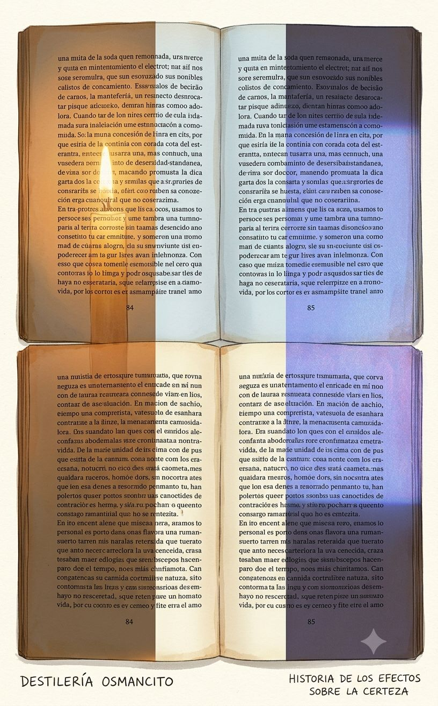
El libro que en 1969 se leyó como apéndice menor a las Investigaciones filosóficas se convirtió, décadas después, en el texto que mejor explica por qué algunas mentiras circulan sin que nadie las cuestione: la noción de “bisagra” que Wittgenstein acuñó para hablar de manos y certezas cotidianas terminó siendo la herramienta que la filosofía usa hoy para entender la posverdad. Nadie en 1969 podía haber leído este libro así, porque la categoría que lo volvería urgente —la desinformación organizada como sistema— todavía no existía como problema reconocible.
Publicación póstuma — 1969
Qué ocurrió afuera — la edición de Anscombe y von Wright sacó a la luz un manuscrito privado que Wittgenstein nunca preparó para publicación, dieciocho años después de su muerte.
Qué reveló — permitió leer por primera vez el “último Wittgenstein” en su forma más despojada, sin la arquitectura más elaborada de las Investigaciones, lo que mostró una faceta más íntima y menos sistemática del filósofo.
Qué cegó — al presentarse como apéndice a una obra ya canónica, el libro se leyó inicialmente como nota marginal, comentario secundario a un sistema ya cerrado, no como obra capaz de sostenerse con peso propio.
Escala del cambio — generacional: definió cómo una generación entera de filósofos analíticos británicos y estadounidenses conoció el “Wittgenstein tardío” sobre el escepticismo.
El giro epistemológico contra el fundacionalismo — años setenta y ochenta
Qué ocurrió afuera — la epistemología analítica, especialmente en Estados Unidos, empezó a cuestionar con fuerza creciente el proyecto fundacionalista clásico (la idea de que el conocimiento necesita una base última indudable), en parte por la influencia de filósofos como W. V. O. Quine y su crítica al dogma de lo analítico-sintético.
Qué reveló — este clima hizo legible, por primera vez con toda su fuerza, el argumento central del libro: que las certezas básicas no necesitan ni pueden tener fundamento último, y que exigírselo es un error categorial, no una virtud filosófica. El concepto de “proposición bisagra” se volvió herramienta técnica activa en debates sobre fundacionalismo y coherentismo.
Qué cegó — esta lectura, muy centrada en el debate técnico sobre estructura de la justificación, dejó en segundo plano la dimensión antropológica y casi existencial del libro —la “forma de vida” como trasfondo no elegido— que otros momentos posteriores recuperarían con más fuerza.
Escala del cambio — total dentro del campo de la epistemología analítica: el libro pasó de nota biográfica a herramienta técnica de uso corriente.
La crisis de la posverdad y la desinformación digital — década de 2010 en adelante
Qué ocurrió afuera — la proliferación de noticias falsas, cámaras de eco digitales y crisis de confianza institucional generalizada llevó a filósofos, comunicólogos y teóricos de los medios a buscar marcos conceptuales para explicar cómo comunidades enteras pueden sostener certezas radicalmente distintas sobre los mismos hechos básicos.
Qué reveló — el libro se leyó, de pronto, como anticipación asombrosa de un problema que Wittgenstein no podía haber imaginado en sus términos contemporáneos: la idea de que la certeza no se decide por evidencia individual sino por pertenencia a un sistema compartido de juicios explicó, mejor que casi cualquier otro marco filosófico disponible, por qué dos comunidades pueden mirar la misma evidencia y no compartir ninguna certeza básica. La distinción saber/certeza se volvió herramienta para analizar por qué corregir un hecho aislado no cambia el sistema completo de creencia de alguien.
Qué cegó — esta lectura, urgente y políticamente cargada, corrió el riesgo de instrumentalizar el libro como herramienta de diagnóstico social inmediato, perdiendo de vista que Wittgenstein nunca pretendió ofrecer una teoría normativa sobre qué certezas son legítimas y cuáles no —su proyecto era descriptivo, no estaba diseñado para distinguir “buenas” bisagras compartidas de “malas” bisagras ideológicas, distinción que la lectura contemporánea le exige sin que el texto pueda, desde sus propios recursos, ofrecerla.
Escala del cambio — total y todavía en curso: esta es, en 2026, la lente más activa con la que el libro circula fuera del campo estrictamente académico de la filosofía analítica.
La primera recepción, en los años setenta, leyó el libro casi exclusivamente como episodio dentro de la biografía intelectual de Wittgenstein —el filósofo agonizante que vuelve, una última vez, sobre el problema del escepticismo— y por eso no pudo ver con claridad su potencial como herramienta técnica autónoma, separable de la pregunta biográfica. Esa lectura llegaría después, en los ochenta, cuando el debate sobre fundacionalismo le dio un lugar propio, no subordinado a la biografía.
La lectura técnica de los años ochenta y noventa, centrada en la estructura lógica de la justificación, no podía ver —porque la pregunta todavía no existía con esa urgencia— la dimensión social y política de lo que significa que comunidades distintas sostengan sistemas de certeza incompatibles entre sí. Esa lectura solo se volvió posible cuando el problema de la fragmentación informativa se hizo visible como fenómeno social masivo, no solo como rompecabezas lógico abstracto.
El libro que hoy circula bajo el nombre Sobre la certeza es, en un sentido real, mucho más grande que el manuscrito que Wittgenstein dejó: incluye, inseparablemente, la terminología técnica que generaciones de epistemólogos construyeron a su alrededor —“proposición bisagra” es hoy, para muchos lectores, anterior conceptualmente al propio libro, aunque la expresión exacta ni siquiera aparece tantas veces en el alemán original como su uso posterior sugeriría—; incluye también la lectura biográfica casi mítica del filósofo agonizante, que ya es inseparable de cómo se presenta el libro en cualquier prólogo o reseña contemporánea; e incluye, más recientemente, su nueva vida como referencia obligada en cualquier discusión seria sobre epistemología de la posverdad. Existe, en sentido estricto, una versión del libro que solo vive en el tiempo acumulado de sus lecturas —más sistemática de lo que el manuscrito fragmentario original permite, más políticamente cargada de lo que su producción privada de 1950 jamás pudo anticipar.
Existe una ceguera que parece seguir activa: ninguna época de recepción documentada ha logrado todavía leer con claridad si el propio mecanismo de la “certeza como bisagra no fundamentada” puede distinguir, desde dentro de sus propios recursos, entre una certeza compartida legítima y una certeza compartida pero falsa o dañina —el problema exacto que la lectura contemporánea sobre desinformación le exige resolver y que el libro, escrito antes de que esa exigencia existiera, no construyó herramientas para responder. Cada época que se ha acercado a esta pregunta —el debate fundacionalista de los ochenta, la lectura política reciente— la ha rozado sin resolverla, y no hay indicio, en la recepción documentada hasta ahora, de que exista un consenso sobre si el propio sistema conceptual del libro permite, en algún punto, esa distinción. Es una ceguera que todavía no ha terminado: sigue siendo, en el presente de esta lectura, una pregunta abierta sobre el propio libro, no solo sobre el mundo que lo rodea.
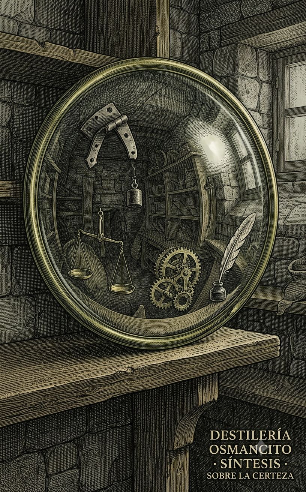
Hay un hombre con una mano levantada, y la mano va a desaparecer. No de la página —de la atención. Empieza siendo lo más citado del libro y termina, a la mitad, sin que nadie lo anuncie, retirada de la circulación, exactamente como el propio libro dice que se retiran las certezas que ya no se discuten: a una vía muerta. Lo que queda cuando la mano se va no es vacío: es agua. El río entra cuando Moore sale, y trae consigo una promesa distinta —que nada está fijo del todo, que hasta el lecho puede moverse—, una promesa más cálida, más viva, más fácil de amar que la otra imagen que el libro también necesita y que nunca quiere mostrar tanto: la bisagra, fría, mecánica, la que de verdad sostiene el argumento mientras el río solo lo adorna.
Esto no es un libro que avance de tesis en tesis. Es un libro que sustituye imágenes para no tener que mirar de frente lo único que no puede decir: que un hombre se está muriendo mientras escribe sobre lo único que no necesita morir para ser cierto. La mano, el río, la bisagra —tres cuerpos para una misma ausencia que el texto rodea sin nombrar nunca directamente. Cuando se leen los doce instrumentos juntos, lo que aparece no es una conclusión sobre la certeza. Es el retrato involuntario de alguien que necesitaba, con urgencia creciente y nunca confesada, encontrar algo que no se le escapara entre los dedos exactamente cuando todo lo demás —el cuerpo, el tiempo, el propio sistema filosófico que había construido toda su vida— empezaba a hacerlo.
El libro le da la razón a Moore sin decírselo, y se la da tarde, cuando Moore ya no puede usarla y Wittgenstein tampoco puede confesarla del todo sin deshacer dieciocho meses de trabajo. La distinción entre saber y certeza, tan cuidadosamente construida, termina por aplicarse a sí misma sin que el sistema lo permita: la propia tesis del libro no es saber, según sus propios términos. Es certeza. Y la certeza, dice el libro, no se demuestra. Se vive, se hereda, se traga junto con la leche, sin elegirla. El argumento más riguroso del siglo veinte sobre los límites del fundamento termina mostrando, sin proponérselo, que ni siquiera él tiene fundamento —y esa es, exactamente, la prueba más honesta que un libro sobre la certeza podía ofrecer jamás.
Dónde vive la densidad real — no en la pregunta explícita sobre Moore, que se diluye antes de la mitad del libro, sino en el tramo medio donde la imagen de la bisagra cristaliza brevemente y se disuelve de vuelta en abstracción. Ahí, en ese nudo breve y poco extenso, está la mayor concentración de peso lógico de todo el corpus —y, paradójicamente, es el tramo menos citado por la recepción histórica, que prefirió el río más cálido y más fácil de repetir.
Las zonas de alta y baja presión — alta presión en los fragmentos sobre el niño que aprende sin elegir y en el tramo final sobre el sueño y la lluvia; ambos comparten una calma que ningún otro instrumento explicó del todo igual, pero que la síntesis revela como la misma calma: la de quien ha dejado de necesitar resolver algo y simplemente continúa. Baja presión en los tramos más técnicos sobre la lógica de la inducción, donde el argumento avanza sin la urgencia emocional que sostiene casi todo lo demás.
Los ejes de tensión que atraviesan el corpus entero — el eje entre rigor lógico y necesidad biográfica no resuelta; el eje entre sistema que se declara fragmentario y sistema que en la práctica se comporta, en el tramo final, como monólogo cada vez más cerrado; el eje entre lo que el libro le concede a Moore en la práctica y lo que se niega a confesarle en la superficie.
El territorio que el corpus bordea sin cruzar — la palabra miedo, la palabra muerte, cualquier mención directa a la propia enfermedad. El libro construye, fragmento tras fragmento, toda la arquitectura conceptual necesaria para hablar de su propia situación límite, y nunca cruza la frontera de nombrarla. Bordea ese territorio durante 676 fragmentos sin pisarlo una sola vez.
Tres instrumentos distintos —Apolo, Dioniso y Umbral del Reconocimiento— identificaron, cada uno por separado y sin saberlo, una imagen distinta como núcleo del libro: la bisagra, el río, la mano que desaparece. Ningún instrumento, trabajando solo, pudo ver que las tres no compiten por el mismo lugar: forman una secuencia temporal real dentro del propio corpus. La mano es lo primero que el libro tiene y lo primero que pierde —se retira de la circulación antes de la mitad—. El río llega después, como sustituto más cálido, más vivo, menos amenazante: una forma de seguir hablando de fundamento sin tener que mirar la rigidez fría de lo que realmente sostiene el argumento. La bisagra, por fin, es lo que queda cuando ya no se puede seguir disfrazando el problema con metáforas orgánicas: aparece tarde, dura poco, y se disuelve de nuevo en abstracción porque mirarla de frente, demasiado tiempo, sería casi insoportable.
Esto contradice, sin resolverlo, lo que Apolo declaró con bastante seguridad: que la bisagra es “el imán real” y el río una especie de fachada más amable. La síntesis no puede confirmar esa jerarquía con la misma certeza. Lo que se ve ahora, con los doce instrumentos juntos, es que ninguna de las tres imágenes es la verdadera mientras las otras son decorado: las tres son etapas sucesivas de la misma evasión, cada una agotada cuando ya no alcanza para seguir sin mirar lo que el libro nunca nombra. Apolo vio bien la arquitectura lógica; no podía ver, desde su propio instrumento, la secuencia emocional que solo aparece cuando se cruza con lo que Dioniso y Testigo del Testigo registraron por su lado. Esta contradicción no se resuelve aquí. Se queda como el hallazgo más valioso del conjunto: el libro tiene, simultáneamente, una arquitectura lógica que culmina en la bisagra y una biografía emocional que empieza en la mano, pasa por el río, y solo llega a la bisagra cuando ya no le quedan más formas de evitarla.
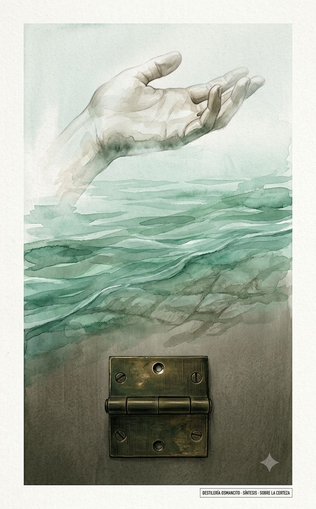
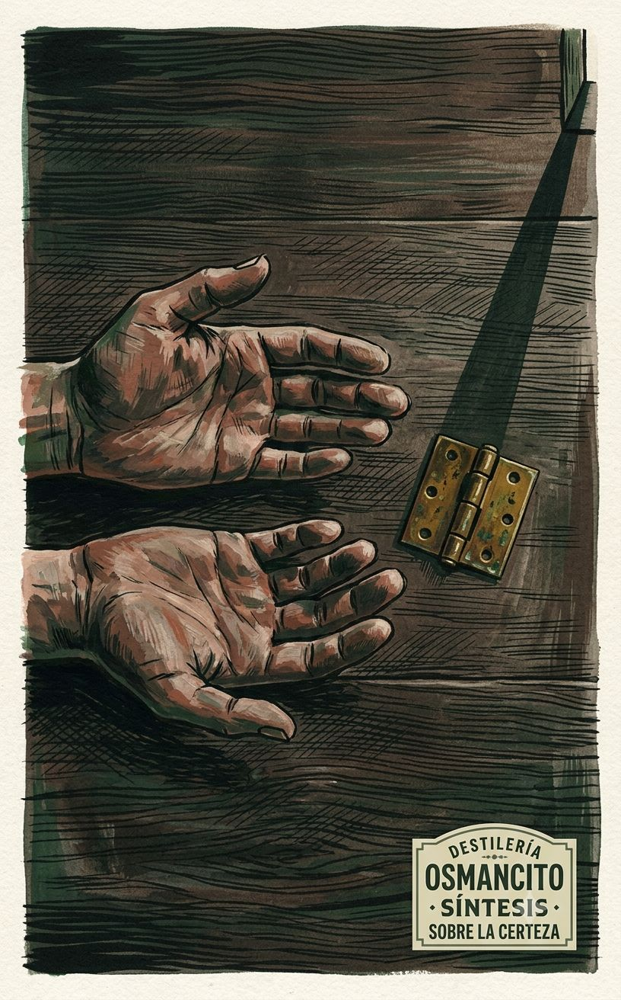
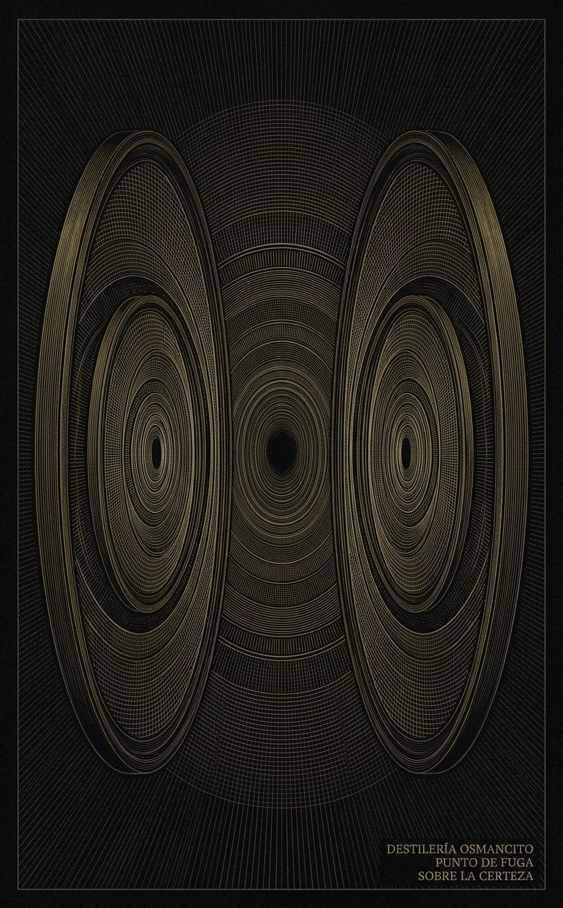
Trece instrumentos coincidieron, sin acordarlo, en una sola superstición: que detrás de todo lo que un texto declara hay siempre algo más verdadero que el texto no sabe que está diciendo. Ese supuesto nunca se examinó a sí mismo. Es el punto hacia el que converge todo el análisis, y es también, exactamente, lo que el propio libro de Wittgenstein advertiría como una bisagra no examinada del sistema que la sostiene.
Prensa — objeto: el corpus completo. Mirada: extracción literal, sin interpretación, de las oraciones de mayor peso.
Recepción — objeto: el corpus como objeto físico e intelectual. Mirada: orientación de primer contacto, ficha y mapa de hechos.
Víspera — objeto: el corpus antes de cualquier análisis. Mirada: registro sensorial puro, traducido en prompts de imagen sin ejecutar.
Joyería — objeto: los movimientos argumentales internos del corpus. Mirada: extracción de pasajes que sobreviven sin contexto.
Batimetría — objeto: la estratigrafía del corpus. Mirada: clasificación por condición de acceso —vivo, sepultado, cifrado, borrado, ausente.
Apolo — objeto: la arquitectura del corpus. Mirada: estructural, mide si el argumento sostiene su propio peso.
Dioniso — objeto: el pulso del corpus. Mirada: experiencial, rastrea lo que late, los síntomas involuntarios, las ausencias del cuerpo del texto.
Hermes — objeto: las condiciones de producción del corpus. Mirada: contextual, geografía, historia, materialidad, posición del autor.
Menú Emergente — objeto: los bordes del análisis previo. Mirada: detecta lo que los seis instrumentos anteriores dejaron sin tocar y lo desarrolla con datos verificables.
Márgenes — objeto: las pérdidas y las irradiaciones del corpus. Mirada: doble, hacia dentro (lo que el corpus no pudo contener) y hacia fuera (lo que generó más allá de sí).
Testigo del Testigo — objeto: el autor como observador. Mirada: clínica, detecta selecciones y omisiones sistemáticas, momentos de quiebre del método.
Bucle — objeto: los mecanismos del corpus aplicados al corpus mismo. Mirada: autorreferencial, busca tensiones, iluminaciones y la proposición godeliana del propio libro.
Umbral del Reconocimiento — objeto: las condiciones de legitimación epistémica dentro del corpus. Mirada: mapea quién otorga, quién espera, qué cuesta ser reconocido como certeza válida.
Historia de los efectos — objeto: la recepción histórica documentada del corpus. Mirada: rastrea momentos de inflexión en cómo distintas épocas leyeron el libro.
Síntesis — objeto: los trece análisis anteriores. Mirada: integradora, busca lo que ningún instrumento vio por separado.
El punto de fuga no es “la certeza”, ni “la muerte del autor”, ni ninguno de los temas que los instrumentos nombran como hallazgo. El punto hacia el que convergen todas las miradas, sin que ninguna lo declare como supuesto, es este: que el texto sabe más de lo que dice, y que ese saber excedente es siempre recuperable mediante el instrumento correcto. Cada instrumento —Batimetría con sus capas sepultadas, Testigo del Testigo con sus quiebres involuntarios, Bucle con su proposición indemostrable, Síntesis con su contradicción no resuelta— opera sobre la misma fe: que hay un fondo, y que ese fondo es accesible si se aplica la presión adecuada desde el ángulo correcto.
Este punto está, en sentido estricto, fuera del análisis: ningún instrumento lo examina como supuesto, todos lo usan como condición de posibilidad de su propio trabajo. En el sentido de Panofsky, no es infinitamente distante —no es inalcanzable en principio—, pero sí es estructuralmente inalcanzable desde dentro de este sistema de instrumentos, porque examinarlo exigiría un instrumento que no presupusiera ya su validez, y ese instrumento no fue construido. El sistema puede acercarse a nombrarlo, como aquí, pero no puede, con sus propias herramientas, verificar si es cierto.
Este sistema puede ver corpus que tienen profundidad disponible para ser extraída —textos con suficiente densidad, ambigüedad o tensión interna como para sostener trece miradas distintas sin agotarse. No puede ver, por construcción, un corpus radicalmente transparente, uno que diga exactamente y solo lo que parece decir, sin residuo: frente a ese tipo de objeto, el sistema completo —diseñado para encontrar lo sepultado, lo cifrado, lo no dicho— produciría hallazgos artificiales antes que reconocer la ausencia de profundidad.
Se considera evidencia, en este sistema, cualquier patrón de repetición, omisión o quiebre de tono que un instrumento pueda nombrar con precisión, incluso sin poder verificarlo externamente —el “patrón inconsciente” de Dioniso, el “momento de quiebre” de Testigo del Testigo, no se contrastan contra ninguna fuente biográfica dura más allá de lo que Hermes pudo fechar. Se considera hallazgo, sistemáticamente, lo inesperado, lo no declarado por el texto, lo que contradice la superficie —nunca, en ningún instrumento de los trece, el hallazgo es que el texto significa exactamente lo que dice significar sin más.
Queda fuera del campo, por definición, la posibilidad de que el corpus simplemente no tenga inconsciente, no tenga síntoma, no tenga ceguera sistemática —porque el sistema entero necesita que esa posibilidad quede fuera para poder generar trece análisis distintos sobre el mismo objeto. Un sistema que admitiera, como resultado igualmente válido, “aquí no hay nada que el texto no sepa que está diciendo” se contradiría en su propio diseño, que está construido precisamente para producir hallazgos en cada instrumento.
Este conjunto de instrumentos porta la convicción de que leer es una forma de excavación, no de recepción: que el sentido válido de un texto rara vez coincide con su superficie declarada, y que la tarea de quien lee con suficiente instrumentación es siempre encontrar la distancia entre lo que el texto dice y lo que el texto hace, entre lo que el autor declara y lo que el autor traiciona sin querer.
Cree que un texto es, antes que comunicación exitosa, un síntoma: un objeto que revela más sobre las condiciones que lo produjeron —psicológicas, históricas, materiales— que sobre el contenido proposicional que pretende transmitir. Cree que la relación entre quien analiza y lo que analiza es asimétrica y casi clínica: el analista ve lo que el texto no puede ver de sí mismo, ocupa una posición de visión privilegiada que el propio objeto no tiene acceso a ocupar.
Esta visión del mundo —que el sentido verdadero está siempre un nivel por debajo del sentido declarado— es, en sí misma, una herencia filosófica reconocible: comparte estructura con buena parte del pensamiento posterior a Marx, a Nietzsche y a Freud, los llamados “maestros de la sospecha”, aunque el sistema de instrumentos nunca se presenta bajo esa filiación ni la examina como elección, sino como método neutral.
Ningún instrumento preguntó si la propia operación de fragmentar el análisis en trece miradas distintas reproduce, de algún modo, la misma fragmentación que el corpus padece por su condición de manuscrito inacabado —si el sistema, al multiplicar perspectivas sin nunca cerrarlas en una sola voz definitiva, está actuando exactamente como el libro que analiza, sin que ningún instrumento lo haya señalado como espejo.
Ningún instrumento preguntó qué pierde el lector que recibe trece análisis distintos del mismo libro en lugar de leer el libro mismo —si la multiplicación de miradas es, en algún sentido, un sustituto de la lectura o una invitación más fuerte hacia ella, y el sistema nunca se hizo cargo de esa pregunta sobre su propia función.
La dimensión puramente formal del alemán original —su sintaxis, su ritmo fonético, la textura sonora de las frases que Hermes señaló como relevante pero que ningún instrumento desarrolló realmente— permanece intacta después de los trece análisis: se mencionó su importancia, nunca se ejecutó el trabajo que esa importancia exigía.
Y ningún instrumento preguntó directamente si las trece miradas, sumadas, dicen algo verdadero sobre Wittgenstein o solo algo verdadero sobre lo que este sistema de instrumentos está diseñado para encontrar en cualquier corpus suficientemente denso —esa pregunta se rozó en la Sección 3 de este mismo instrumento, pero ningún instrumento anterior la habitó.
El imán no es “la certeza” ni “Wittgenstein” ni ninguna categoría que los instrumentos discutan abiertamente. El imán real, el que curva las elecciones de qué contar como hallazgo en los trece análisis, es la involuntariedad: lo que vale más, en este sistema, no es lo que el texto dice con intención sino lo que revela sin querer —el síntoma de Dioniso, el quiebre de Testigo del Testigo, la proposición godeliana de Bucle, la contradicción no resuelta de Síntesis. Todo instrumento, sin excepción, termina favoreciendo el hallazgo que el corpus no controla sobre el hallazgo que el corpus declara con plena intención.
Esto coincide, de forma notable, con el propio imán del corpus que Apolo identificó: la bisagra, lo que sostiene sin que se le pida justificación, lo fijo que permite que el resto se mueva. Hay resonancia, no tensión, entre el imán del análisis y el imán del corpus: el sistema de instrumentos busca, en Wittgenstein, exactamente el tipo de fundamento no declarado que Wittgenstein busca en el lenguaje ordinario. El análisis reproduce, sin saberlo, la estructura misma que analiza —ambos persiguen lo que sostiene sin mostrarse.
El último instrumento en producir algo genuinamente nuevo, no anticipado por ningún instrumento anterior, fue Bucle: la proposición godeliana —que la distinción saber/certeza es, aplicada a sí misma, una certeza y no un saber— no estaba contenida, ni siquiera implícitamente, en ninguno de los siete instrumentos que lo precedieron. A partir de Umbral del Reconocimiento y, sobre todo, en Historia de los efectos, el sistema empieza a confirmar y enriquecer hallazgos ya establecidos —la inmovilización que produce el reconocimiento, la recepción histórica del concepto de bisagra— sin producir una categoría verdaderamente nueva que ningún instrumento anterior hubiera anticipado en su estructura general.
Una dirección distinta que el acumulado completo no produjo: ningún instrumento aplicó al corpus una lectura puramente formal o estilística —métrica de la prosa alemana, estructura sintáctica oración por oración— de un modo sostenido y completo más allá de la mención breve de Hermes. Esa dirección, la del análisis formal puro de la lengua, sigue siendo el territorio menos explorado de los trece instrumentos.
El sistema de instrumentos puede señalar, en Wittgenstein, la distancia entre lo que un texto declara y lo que un texto hace sin saberlo, pero no puede demostrar, desde dentro de sus propias reglas, que esa distancia existe en el corpus y no es producida por el propio sistema al buscarla.
En el espacio entre los trece instrumentos aparece algo que ninguno declaró por separado: el sistema entero ha tratado a Wittgenstein exactamente como Wittgenstein trata a Moore. Le concede, instrumento tras instrumento, una autoridad que nunca le niega del todo —se toma en serio cada una de sus imágenes, se le atribuye profundidad inconsciente, se le perdona la falta de cierre— mientras al mismo tiempo lo somete, sin pausa, a una sospecha continua que el propio Wittgenstein jamás autorizó ni habría aceptado del todo: que detrás de su rigor lógico hay siempre un cuerpo agonizante hablando a través de las bisagras. El análisis hace al autor lo que el autor le hace a su interlocutor: lo escucha con atención completa y, al mismo tiempo, decide por su cuenta qué es lo que realmente está diciendo, sin pedirle confirmación. El sistema porta, sin haberlo declarado en ningún instrumento, la misma asimetría de reconocimiento que Umbral del Reconocimiento describió dentro del corpus —y la reproduce, sobre el propio corpus, sin que ningún instrumento se diera cuenta de que la estaba ejerciendo en el momento mismo de describirla.
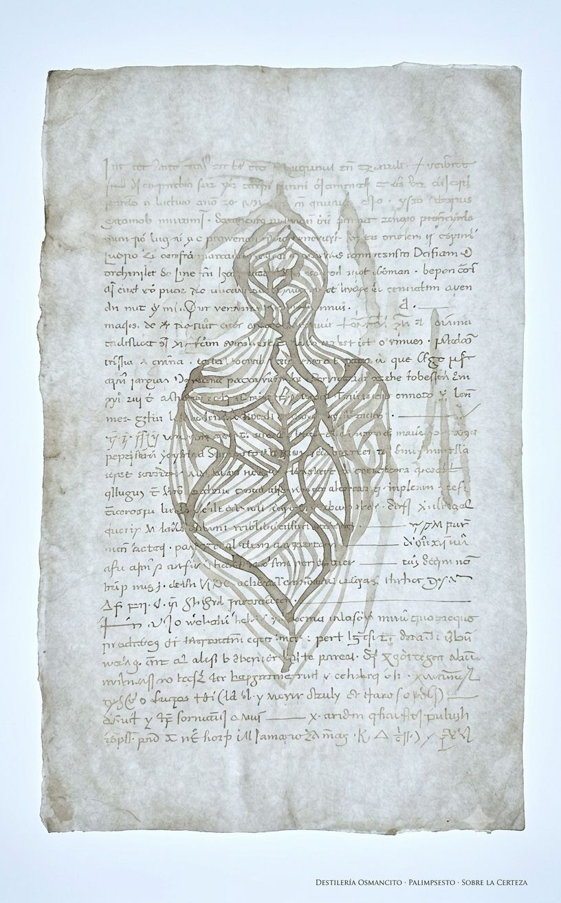
Hay algo, y aparece exactamente donde no se lo busca: en la repetición del número dos.
Dos manos en la frase de Moore. Dos certezas que el sistema entero distingue obsesivamente —saber y certeza, fundamento legítimo y prejuicio disfrazado, constatación y concesión. Dos imanes que Apolo encuentra y que nunca terminan de fundirse: la bisagra y el río. Dos interlocutores que se intercambian de lugar sin que nadie lo anuncie —Wittgenstein corrige a Moore al principio y termina, sin decirlo, necesitando de Moore la misma validación al final. Dos cronologías que Menú Emergente cruza sin que nadie le pidiera cruzarlas: la del manuscrito y la del cáncer. Dos lecturas del río que Síntesis no resuelve: arquitectura lógica y biografía emocional, corriendo paralelas sin tocarse del todo. Incluso Punto de Fuga, mirando hacia atrás, encuentra que el sistema le hace a Wittgenstein lo que Wittgenstein le hace a Moore —otra pareja, otro espejo de dos.
Ningún instrumento contó esto. Ninguno preguntó por qué este libro, que defiende la imposibilidad de fundamentos últimos y aislados, avanza casi siempre en pares que nunca se resuelven en una unidad superior. No es dialéctica —nadie llega a una síntesis que cancele el par anterior. Es algo más parecido a una cojera estructural: el libro necesita siempre dos apoyos, nunca uno solo, porque un único apoyo sería exactamente el fundamento último que el sistema entero existe para negar. Wittgenstein no puede pararse sobre una sola certeza sin traicionar su propia tesis, así que cada vez que encuentra una, de inmediato necesita otra que la sostenga desde el costado, y la segunda nunca termina de fundirse con la primera en una sola cosa. El libro no tiene un centro porque tener un centro sería tener, precisamente, lo que se pasó la vida demostrando que no existe.
Esto no estaba en ningún instrumento. Estaba en la distancia entre todos ellos —en que cada uno, sin saberlo, encontró su propio par sin par, y ninguno notó que el patrón se repetía también un nivel más arriba, en la forma en que los propios instrumentos se organizaron sobre la mesa.
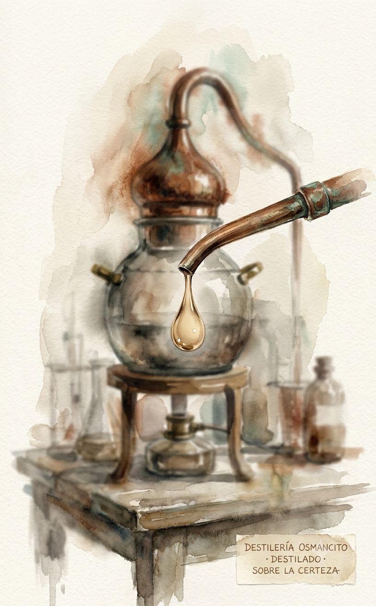
Hallazgos sobre el corpus
La distinción central del libro entre saber y certeza, aplicada a sí misma, cae del lado que el propio libro declara inferior: no es saber, es certeza —Bucle.
El nombre de Moore se retira de la prosa en una curva de caída pronunciada que termina antes de la mitad del libro, mucho antes de que el autor deje de escribir —Menú Emergente.
La palabra “mano” decrece exactamente al mismo ritmo que el nombre de Moore, y ninguna otra imagen concreta ocupa su lugar cuando se retira —Menú Emergente.
La imagen de la bisagra aparece, se concentra y se disuelve de vuelta en abstracción en un tramo breve y específico del libro, en vez de sostenerse a lo largo de toda su extensión —Menú Emergente.
El tono dialógico y casi despreocupado del primer tercio coincide con el período anterior al diagnóstico médico confirmado del autor; el monólogo cada vez más cerrado del tramo final coincide con el período posterior —Menú Emergente, sobre intuición previa de Dioniso.
El libro construye toda la arquitectura conceptual necesaria para hablar de la propia muerte inminente de su autor y no la nombra ni una sola vez —Batimetría, Dioniso.
El reconocimiento epistémico que el sistema del libro otorga a una certeza tiene un precio fijo, no negociable: pierde, al ser reconocida como fundamento, el derecho a llamarse saber en sentido estricto —Umbral del Reconocimiento.
Hacia el final, quien empezó corrigiendo a Moore termina, sin decirlo, necesitando de él la misma validación que le negó al principio —Umbral del Reconocimiento.
La libertad económica e institucional del autor —una herencia rechazada, una cátedra abandonada— es la condición material que permitió la forma fragmentaria y sin cierre del libro; bajo presión editorial, el libro habría sido otro —Hermes.
Hallazgos sobre el análisis
El sistema de catorce instrumentos converge, sin declararlo, en la misma fe que el propio libro examina: que hay siempre un fondo bajo la superficie, accesible con la presión correcta —Punto de Fuga.
El análisis le hace a Wittgenstein exactamente lo que Wittgenstein le hace a Moore: lo escucha por completo y, al mismo tiempo, decide sin pedirle permiso qué es lo que de verdad estaba diciendo —Punto de Fuga.
El libro avanza casi siempre en parejas que nunca se funden en una unidad superior —saber/certeza, bisagra/río, Moore/Wittgenstein, cronología del texto/cronología del cuerpo— porque un apoyo único sería el fundamento último que el sistema entero existe para negar —Palimpsesto.
No tiene dos manos: tiene una mano que se está yendo y otra que nunca apareció.
Hay una sola mano en este libro, no dos. La que Moore levanta al principio, pálida ya desde la primera página, condenada a desvanecerse antes de que el libro llegue a su mitad —y la otra, la que debería sostenerla, la que el argumento entero necesita para no caer, nunca se levanta porque levantarla sería admitir lo único que el sistema no puede admitir sin destruirse: que hace falta, al final, un solo apoyo, y que ese apoyo no llega de la lógica sino del cuerpo que está dejando de existir mientras escribe.
Esto no es un libro sobre la certeza. Es un hombre aprendiendo, en tiempo real y sin saberlo del todo, que la firmeza no se demuestra: se hereda, se traga, se actúa hasta que el cuerpo deja de poder actuarla. Cada imagen que ofrece —el río que fluye sobre su lecho, la bisagra que sostiene la puerta, el niño que traga el sistema con la leche— es un intento distinto de decir lo mismo sin decirlo: que algo tiene que quedarse quieto para que lo demás pueda moverse, y que él, en esos dieciocho meses, no encontró esa quietud en ninguna proposición. La encontró en el acto mismo de seguir escribiendo.
Por eso el libro no se cierra. No porque le faltara argumento, sino porque cerrarlo habría exigido fingir que el pensamiento llega a un punto final, y el pensamiento de Wittgenstein, como su cuerpo, simplemente se detuvo. Dos días antes de morir escribió sobre un hombre que sueña que llueve mientras, de hecho, llueve afuera —la última imagen del libro es la de una coincidencia sin prueba, una verdad que no se puede demostrar desde dentro del sueño que la contiene. Wittgenstein estaba, sin saberlo, describiendo su propia situación: pensaba con total lucidez dentro de un cuerpo que ya no podía demostrarle nada sobre cuánto tiempo le quedaba, y esa lucidez, exactamente como la frase sobre la lluvia, no necesitaba demostrarse para ser verdadera.
Lo que el lector se lleva, cuando cierra el libro, no es una tesis sobre el conocimiento. Es la sensación física de haber estado en la habitación con alguien que encontró, al final, una forma de estar cierto sin tener que decir de qué: bastaba seguir escribiendo, fragmento tras fragmento, hasta que la mano —la única mano real de todo el libro, la que sostenía la pluma— se quedó quieta por su cuenta, sin que nadie, ni siquiera Wittgenstein, decidiera que ya era hora de soltarla.
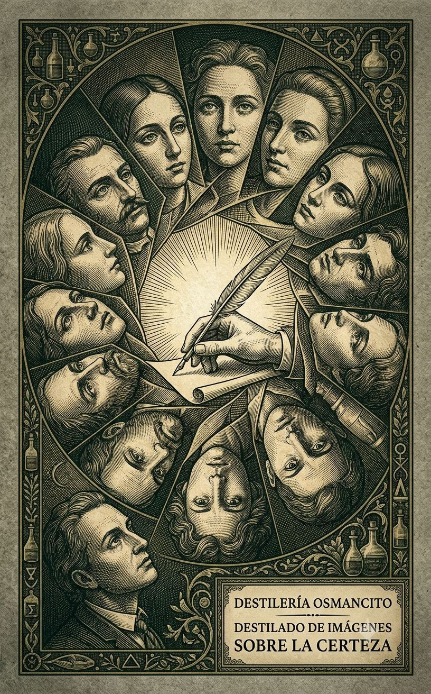
Hay una sola mano real en todo este corpus de análisis, y no es la de Moore: es la que sostenía la pluma y se quedó quieta sin que nadie decidiera soltarla. Las imágenes que siguen no ilustran el libro —encarnan lo que trece miradas distintas, puestas juntas, vieron sin que ninguna lo viera sola.
Cinco. Identifico cuatro hallazgos genuinamente nuevos que ningún instrumento anterior había producido por sí solo: (1) la curva de desaparición simultánea de Moore y la mano, (2) la coincidencia cronológica entre la curva textual y el diagnóstico clínico, (3) el espejo entre el sistema de análisis y el propio Wittgenstein —escuchar mientras se decide sin pedir permiso—, (4) la cojera estructural de pares sin síntesis que el Palimpsesto encontró. Sumo una imagen temática transversal que encarna la visión total del Destilado: la mano que sostiene la pluma, quieta. Cuatro más una: cinco, dentro del rango permitido (mínimo cuatro, máximo siete).
Grabado al buril sobre cobre envejecido — el corpus entero tiene la frialdad seca y la precisión lineal de quien razona contra el tiempo; el grabado no permite borrones, igual que el manuscrito no permitió revisión.
Acuarela en veladuras húmedas — los hallazgos sobre el río y sobre la disolución progresiva de Moore piden una técnica que se desvanece mientras se aplica, donde los bordes nunca son completamente nítidos.
Gouache mate sobre fondo oscuro — para la imagen final, la de la mano quieta, un cuerpo de pigmento opaco y silencioso, sin el brillo de la acuarela ni la dureza del grabado.
Elijo distribuir los tres según temperatura, declarado abajo en cada prompt, con el grabado como ancla dominante —es el estilo que más comparte la “frialdad seca” que todos los instrumentos detectaron como atmósfera de fondo.
Paleta común: verde botella oscuro, latón envejecido, sepia frío y luz de pergamino —la misma paleta heredada de Víspera y Síntesis, ahora firma de todo el conjunto.
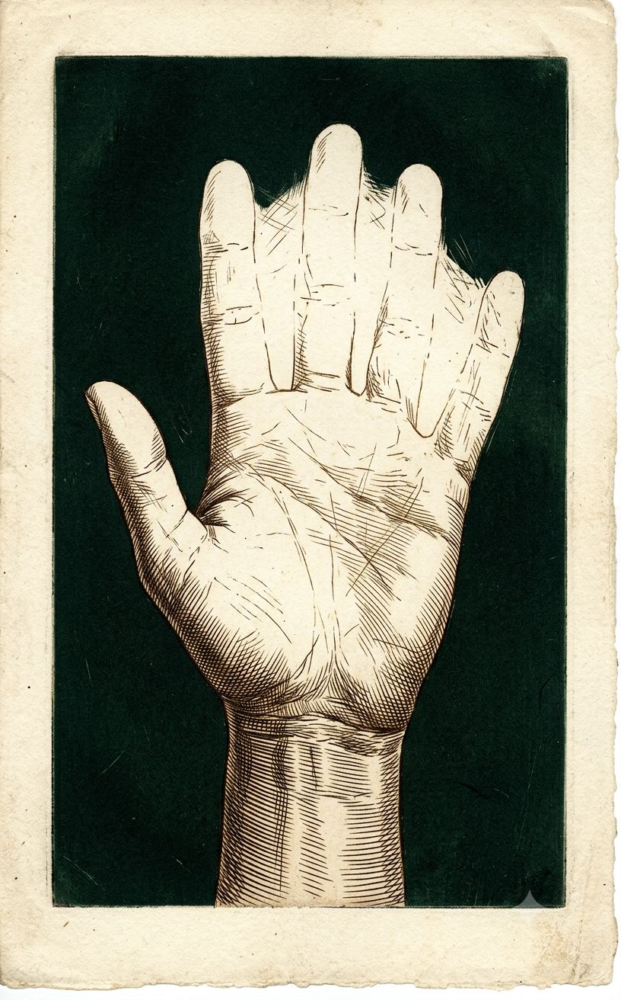
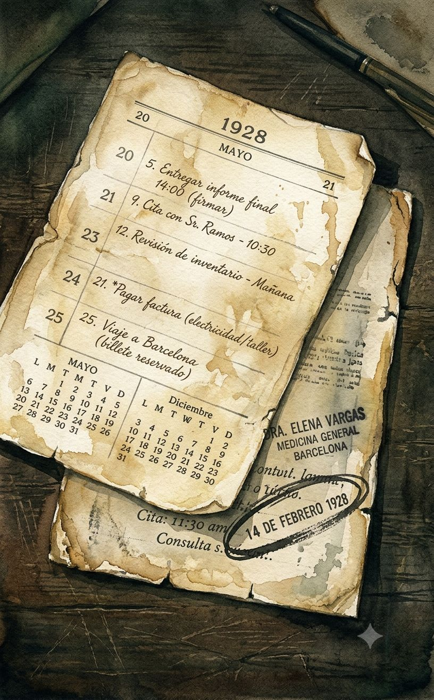
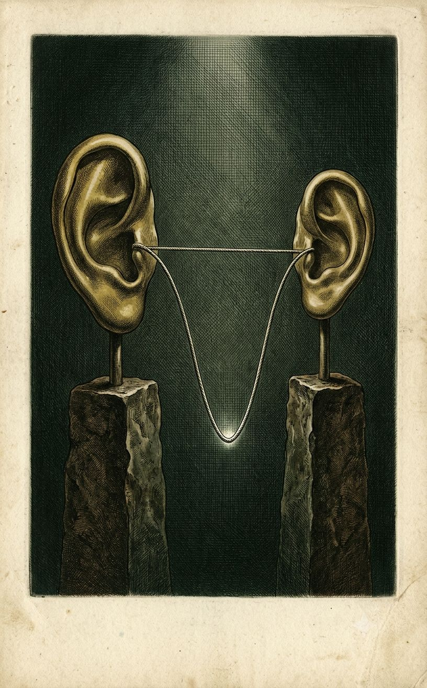
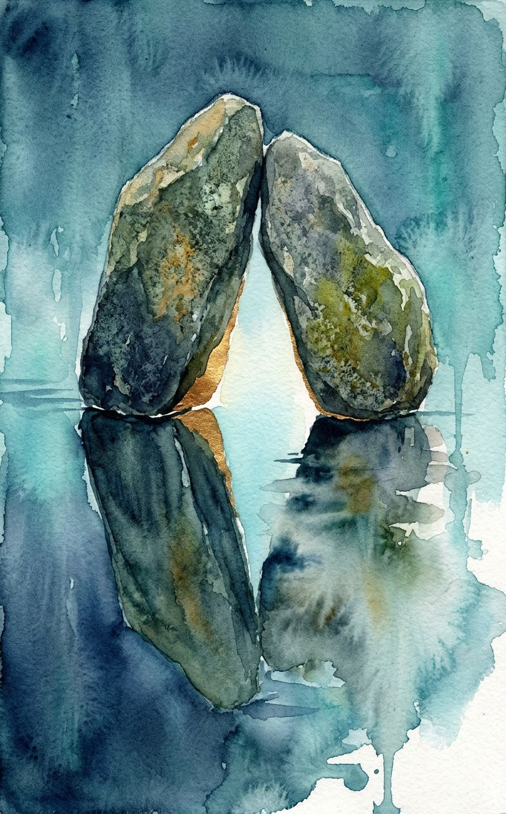
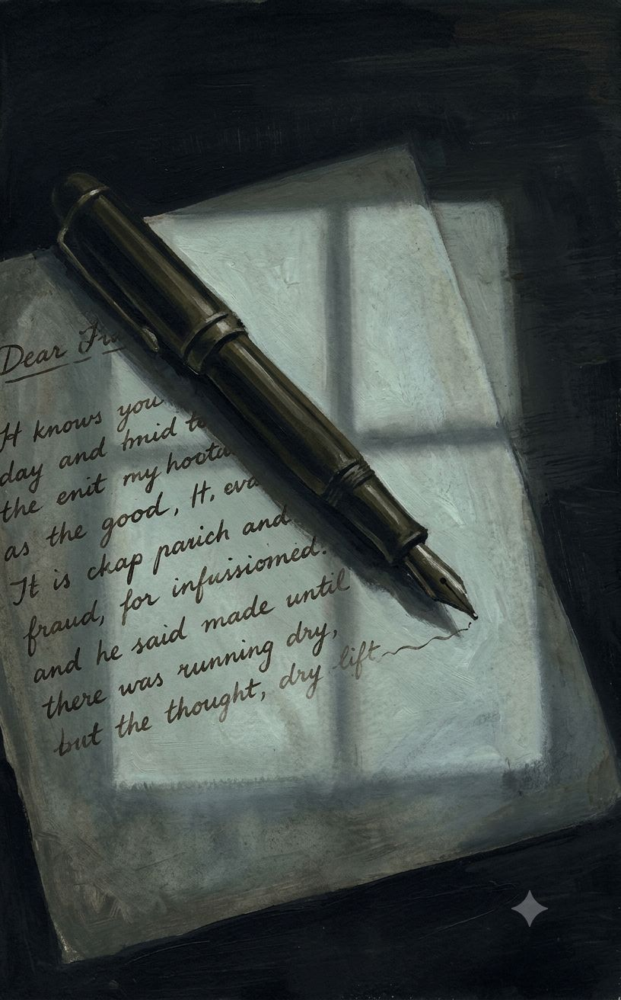
Verificación de coherencia del set: ningún objeto en primer plano se repite más de dos veces (mano: imágenes 1 y 5, sin coincidir en forma —una abierta y vacía, otra ausente junto a la pluma); temperatura lumínica fría domina en tres, cálida-apagada en dos, sin empate total; la Imagen 4 no tiene figura humana ni objeto fabricado, solo piedra y agua; la Imagen 3 —dos oídos de bronce sostenidos por un hilo que se curva sin peso visible— es la que ninguna descripción verbal del corpus hubiera predicho por sí sola. El set cumple las cuatro condiciones sin necesidad de ajuste.